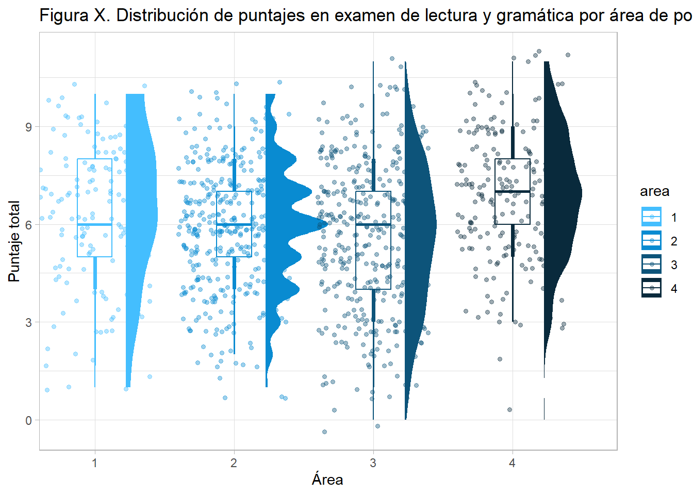
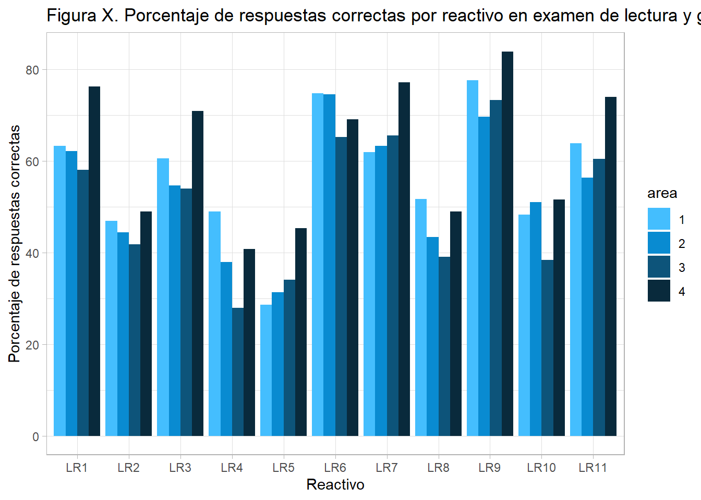
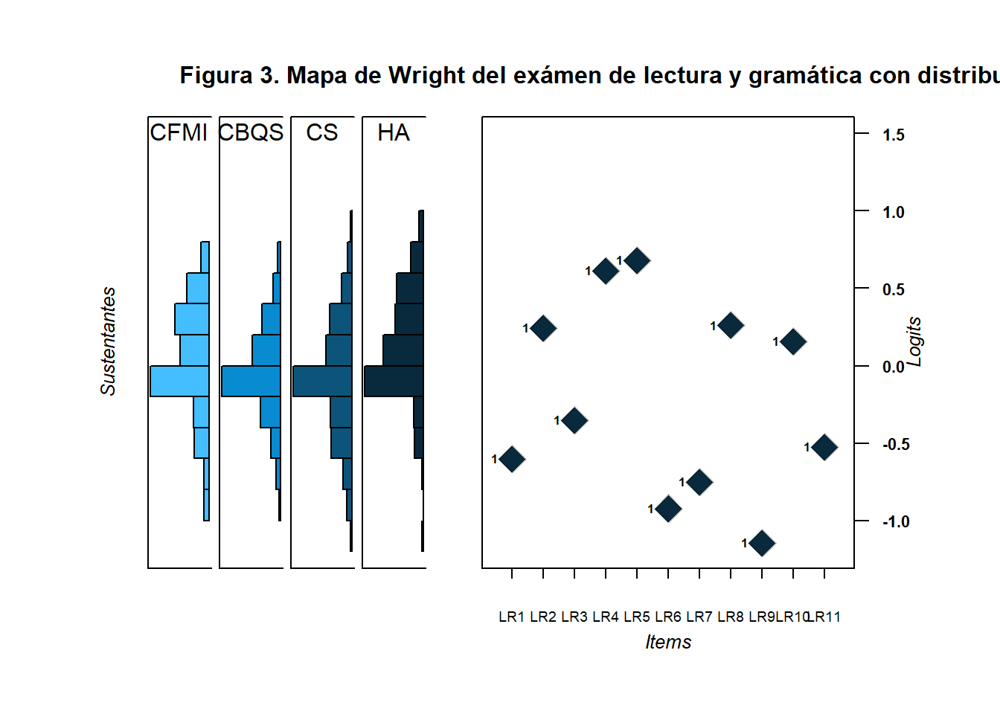
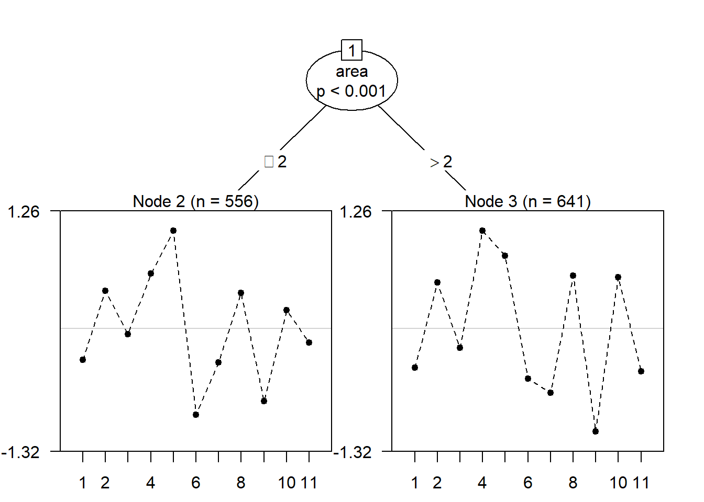
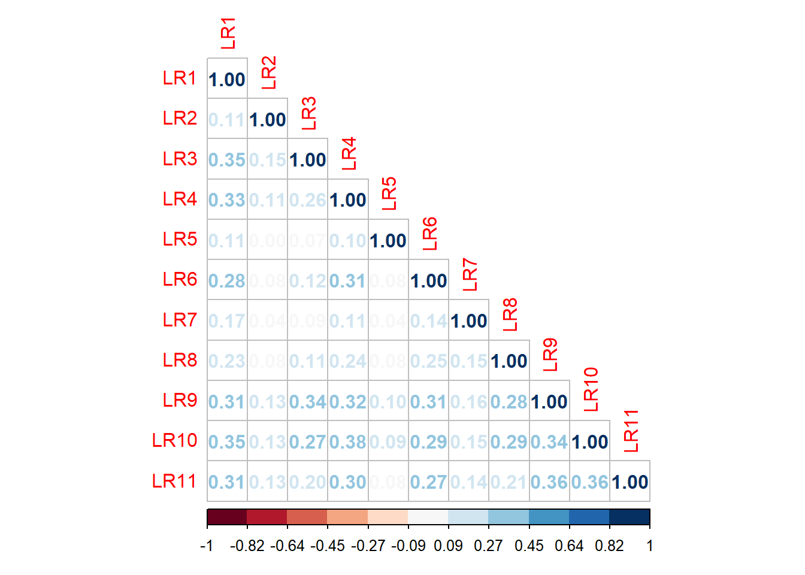

library(data.table)
library(psych)
library(psy)
library(mirt)
library(sjPlot)
library(difR)
library(ltm)
library(lme4)
library(lordif)
library(ShinyItemAnalysis)
library(tidyverse)
library(gt)
library(kableExtra)
library(corrplot)
library(RColorBrewer)
library(eRm)
library(ggdist)
lectura <- read.csv("lectura.csv")
lectura_dicotomicos <- read.csv("lectura dicotomicos.csv")
reactivos_lectura <- read.csv("reactivos lectura.csv")
## Tabla estilo APA
apa <- function(x, title = " ",...) {
gt(x,...) %>%
tab_options(
table.border.top.color = "white",
heading.title.font.size = px(16),
column_labels.border.top.width = 3,
column_labels.border.top.color = "black",
column_labels.border.bottom.width = 3,
column_labels.border.bottom.color = "black",
table_body.border.bottom.color = "black",
table.border.bottom.color = "white",
table.width = pct(100),
table.background.color = "white"
) %>%
cols_align(align="center") %>%
tab_style(
style = list(
cell_borders(
sides = c("top", "bottom"),
color = "white",
weight = px(1)
),
cell_text(
align="center"
),
cell_fill(color = "white", alpha = NULL)
),
locations = cells_body(
columns = everything(),
rows = everything()
)
) %>%
#title setup
tab_header(
title = gt::html("<i>", title, "</i>")
) %>%
opt_align_table_header(align = "left")
}Librerias a utilizar
Para los análisis realizados dentro de este trabajo de tesis, se utilizaron una serie de paquetes dentro del lenguaje de programación de R. A continuación se presenta un listado con todos los paquetes y una breve descripción del uso que se hizo de cada uno de ellos:
- library(psych)
- library(psy)
- library(mirt)
- library(sjPlot)
- library(difR)
- library(ltm)
- library(lme4)
- library(lordif)
- library(ShinyItemAnalysis)
- library(tidyverse)
- library(gt)
- library(kableExtra)
- library(corrplot)
- library(RColorBrewer)
- library(eRm)
- library(ggdist)
Manejo de los datos
Análisis descriptivos para examen de comprensión lectora
Distribución de puntajes totales
Para explorar de forma descriptiva la distribución de respuestas de los sustentantes dentro de cada una de las áreas de posgrado, se comenzó por mostrar una gráfica de —-, la ventaja de este tipo de gráfica es que permite mostrar la distribución enf roma de campana, y a la vez en forma de gráfico de dispersión, incluyendo dentro del mismo gráfico un diagrama de caja.
Para elaborar este tipo de gráfico a partir del puntaje total de la prueba se siguieron los siguientes pasos:
Sumar el puntaje total para cada sustentante
Asegurarse de que no hubieran datos faltantes en las variables a utilizar (puntaje total y genero)
Generar la gráfica base, definiendo la distribución de las variables en los distintos ejes mediante el paquete ggplot2
Añadir la distribución de respuestas en forma de campana
Añadir el diagrama de caja
Añadir el gráfico de dispersión
Especificar los límites a incluir dentro de los ejes
Definir el tema del gráfico para personalizarlo
Añadir etiquetas al gráfico
Personalizar la paleta de colores utilizada
Los pasos recién descritos corresponden uno a uno con las líneas del siguiente bloque de código utilizado para generar el gráfico.
## Figura 1 - Distribución de puntajes por área
lectura_dicotomicos%>%
mutate(Total = rowSums(reactivos_lectura))%>%
drop_na(genero)%>%
mutate(area = factor(area))%>%
ggplot(aes(x = area, y = Total, color = area)) +
ggdist::stat_halfeye(adjust =.8, width = .5, justification = -.5, aes(fill=area)) +
geom_boxplot(width = .25, outlier.shape = NA) +
geom_point(size = 1.3, alpha = .4, position = position_jitter(seed =1, width = .4)) +
coord_cartesian(xlim = c(1.2, NA)) +
theme_light() +
labs(title = "Figura X. Distribución de puntajes en examen de lectura y gramática por área de posgrado",
x = "Área", y = "Puntaje total")+
scale_fill_manual(values = c("#44BEFE", "#098BD1", "#0D547A", "#092A3C"))+
scale_color_manual(values = c("#44BEFE", "#098BD1", "#0D547A", "#092A3C"))
## Warning: Removed 17 rows containing missing values (`stat_slabinterval()`).
## Warning: Removed 17 rows containing non-finite values (`stat_boxplot()`).
## Warning: Removed 17 rows containing missing values (`geom_point()`).
Porcentaje de respuestas correctas por reactivo
Una vez observados los resultados a nivel de puntajes totales por área, para visualizar las diferencias a nivel de porcentaje de respuestas correctas por reactivo por área, se llevaron a cabo los siguientes pasos:
Definir una función personalizada para calcular porcentajes de respuestas correctas
Eliminar valores perdidos
Agrupar los datos por área (permite que los análisis posteriores se realice de forma diferenciada para cada área).
Calcular el porcentaje de respuestas correctas
Modificar la estructura de los resultados para que, en lugar de tener una columna por reactivo, se tuviera una columna con cada reactivo en una fila y una columna con el procentaje de respuestas correctas del reactivo correspondiente en cada fila.
Modificar los resultados para que en lugar de presentarse en formato decimal, se presente en porcentajes cerrados
Generar la base del gráfico en ggplot2, asignando el nombre de los reactivos al eje de las x, el porcentaje de respuestas correctas al eje de las y el área de posgrado al color de las columnas (generando así 4 columnas para cada reactivo en el mismo gráfico.
Definir el gráfico de columnas mediante
geom_col(),definiendo que las columnas se distribuyan una junto a la otra en lugar de una encima de la otra.Definir el tema del gráfico para personalizarlo
Añadir etiquetas al gráfico
Personalizar la paleta de colores utilizada
# Figura 2 - Porcentaje de respuestas correctas por área
reactivos_lectura%>%
cbind(lectura$area)%>%
mutate(area = factor(`lectura$area`))%>%
select(-`lectura$area`)%>%
drop_na()%>%
group_by(area)%>%
summarise(across(everything(), mean))%>%
pivot_longer(!area,
names_to = "reactivo", values_to = "porcentaje")%>%
mutate(porcentaje = round(porcentaje*100,1))%>%
ggplot(aes(x = factor(reactivo, levels = names(reactivos_lectura)), y =porcentaje, fill = area)) + geom_col(position = "dodge") +
theme_light() +
labs(title = "Figura X. Porcentaje de respuestas correctas por reactivo en examen de lectura y gramática por área de posgrado",
x = "Reactivo", y = "Porcentaje de respuestas correctas") +
scale_fill_manual(values = c("#44BEFE", "#098BD1", "#0D547A", "#092A3C"))
Análisis DIF con distintos métodos
Método de Mantel-Haenszel
Uno de los métodos más utilizados para detectar DIF tanto por su simplicidad como por su practicidad es el método de Mantel-Haenszel. En R, es posible realizar este análisis mediante la función difMH() perteneciente al paquete difR de Maguis et al., (2015). Esta función permite la comparación directa entre dos grupos para la detección de DIF. Los principales parámetros que requiere son:
La base de datos que se va a analizar, conteniendo únicamente los reactivos a analizar y la variable correspondiente a la definición de los grupos a analizar, cabe destacar que esta variable puede estar en una base de datos distintos siempre y cuando contenga la misma cantidad de filas y ambas bases de datos esten ordenadas de la misma forma, de manera que cada fila de la base de datos conr eactivos corresponda a la misma fila en la base de datos con los grupos.
La especificación de la variable con los grupos en el argumento
groupEl nombre o identificador del grupo definido como focal dentro del argumento
focal.name, el nombre introducido en este argumento debe ser el mismo que se encuentra dentro de la variable definida en el argumento anterior. Es decir, si dentro de la variable, el grupo focal aparece como el número1, de esa misma manerae debe definirse aquí; en cambio, si en la variable aparece como"focal", entonces se define de esa manera, incluyendo las comillas si se trata de una variable de tipo caracter.
Dados estos requerimientos, es necesario transformar las bases de datos con las que se ha trabajado hasta ahora, para ejemplificar el uso básico de esta función, se presenta a continuación el análisis entre las áreas 1 y 2. Dentro del bloque de código se realizan las siguientes operaciones:
Generar una base de datos que solamente incluya los casos de las dos areas a comparar utilizando la función
filter()del paquetedplyr.Generar una segunda base de datos a partir de esta que incluya únicamente los reactivos.
Ejecutar la función
difMHutilizando estas dos bases de datos, seleccionando al área 2 como grupo focal. Se guarda los resultados de dicho análisis en un objeto nuevo que llamaremosMHCalcular manualmente la razón de probabilidades logarítmicas a partir del estadídstico alfa que la función difMH devuelve
Convertir los resultados del paso anterior en una representación simbólica utilizando la función
symnum(). Los símbolos se asignan de acuerdo con los umbrales sugeridos por Zwick, (2012).Crear una tabla final de resultados que incluye el nombre de cada reactivo, el valor de la razón de probabilidades logarítmicas y el símbolos correspondiente al nivel de DIF que indica el valor correspondiente
lecturaDIF <- lectura%>%
dplyr::select(area)%>%
bind_cols(reactivos_lectura)
areas <- lecturaDIF%>%
filter(area %in% c(1,2))
reactivos <- areas%>%
select(!area)
MH<-difMH(reactivos, areas$area, focal.name= 2)
coef <- round(-2.35 * log(MH$alphaMH), 4)
DIF <- as.vector(symnum(coef, c(-Inf,-1.5,-1, 1, 1.5, Inf), symbols = c("--","-","", "+", "++")))
tabladif<-paste(coef, DIF, sep = " ")%>%as.data.frame()%>%
set_names("Area1 Vs Area2")%>%
bind_cols(reactivos = names(reactivos),. )Si bien este procedimiento es relativamente sencillo, hacerlo para cada uno de los paresse vuelve un proceso recursivo que puede bien ser automatizado. Para ello, en el siguiente bloque de código replicamos el código de la sección anterior y lo encerramos dentro de un bucle del tipo for(). Más concretamente, en el siguiente bloque se realizan los siguientes pasos:
Se crea una lista que incluye cada una de las comparaciones como vectores individuales, de tal forma que
c(1,2)corresponde a la comparación entre las áreas 1 y 2. Esta lista nos será de utilidad para el resto de metodologías DIF que comparan únicamente dos grupos.Se abre el bucle for indicando que será un bucle entre 1 y la cantidad de objetos dentro de la lista, es decir, este bucle va a ejecutar las funciones que contenga un total de 6 veces, y el objeto
iva a tomar los valores entre 1 y 6.Se ejecuta el mismo código que en la sección anterior pero haciendo los reemplazos correspondientes para que funcione dentro de un bucle. En cada sección donde se definen los grupos a utilizar, en lugar de escribir de forma explícita las áreas, se hace referencia a ellas de la siguiente manera:
pairs_list[[i]][1]. Esta línea de código llama al objeto número i (el número de iteración dentro del bucle) y al primer objeto dentro de ese vector en la lista.Para finalizar el bucle, creamos una tabla con todos los resultados utilizando un doble condicional
if. Este condicional le indica al bucle que, si el objeto que nombraremosTablaDIF_CL_MHno existe dentro de nuestro ambiente de trabajo, lo defina como una base de datos con el nombre de nuestros reactivos en una columna y los resultados del bucle como otra columna. En cambio, si el objeto ya existe, simplemente pega los resuultados como una columna mas dentro de la base de datos. Nótese que se define primero el condicional para el caso en el que el objeto sí exista. Esto es simplemente para evitar que el primer bucle muestre resultados duplicados.Finalmente, para presentar los resultados, creamos una tabla exportable en format HTML con la función
kbldel paquetekableExtra. Podemos incluir un título para la tabla, modificar el estilo e incluso los títulos de las columnas.
pairs_list <- list(c(1,2), c(1,3), c(1,4), c(2,3), c(2,4), c(3,4))
for(i in 1:length(pairs_list)){
areas <- lecturaDIF%>%
filter(area %in% c(pairs_list[[i]][1],pairs_list[[i]][2]))
reactivos <- areas%>%
select(!area)
MH<-difMH(reactivos, areas$area, focal.name= pairs_list[[i]][2])
coef <- round(-2.35 * log(MH$alphaMH), 4)
DIF <- as.vector(symnum(coef, c(-Inf,-1.5,-1, 1, 1.5, Inf), symbols = c("--","-","", "+", "++")))
tabladif<-paste(coef, DIF, sep = " ")%>%as.data.frame()%>%
set_names(noquote(paste0("Area",pairs_list[[i]][1]," VS Area", pairs_list[[i]][2])))
if(exists("TablaDIF_CL_MH") == T){TablaDIF_CL_MH <- bind_cols(TablaDIF_CL_MH, tabladif)}
if(exists("TablaDIF_CL_MH") == F){TablaDIF_CL_MH <- bind_cols(reactivos = names(reactivos_lectura), tabladif)}
print(names(TablaDIF_CL_MH))
}
## [1] "reactivos" "Area1 VS Area2"
## [1] "reactivos" "Area1 VS Area2" "Area1 VS Area3"
## [1] "reactivos" "Area1 VS Area2" "Area1 VS Area3" "Area1 VS Area4"
## [1] "reactivos" "Area1 VS Area2" "Area1 VS Area3" "Area1 VS Area4"
## [5] "Area2 VS Area3"
## [1] "reactivos" "Area1 VS Area2" "Area1 VS Area3" "Area1 VS Area4"
## [5] "Area2 VS Area3" "Area2 VS Area4"
## [1] "reactivos" "Area1 VS Area2" "Area1 VS Area3" "Area1 VS Area4"
## [5] "Area2 VS Area3" "Area2 VS Area4" "Area3 VS Area4"
TablaDIF_CL_MH%>%
kbl(caption = "Presencia de DIF Área vs Área en Examen de Lectura con Método Mantel-Haensze")%>%
kable_classic(full_width = F, html_font = "Cambria")%>%
add_header_above(c(" " = 1, "FMI y CBQS" = 1, "FMI y CS" = 1, "FMI y HA" = 1,
"CBQS y CS" = 1, "CBQS y HA" = 1, "CS y HA" = 1))
FMI y CBQS
|
FMI y CS
|
FMI y HA
|
CBQS y CS
|
CBQS y HA
|
CS y HA
|
|
|---|---|---|---|---|---|---|
| reactivos | Area1 VS Area2 | Area1 VS Area3 | Area1 VS Area4 | Area2 VS Area3 | Area2 VS Area4 | Area3 VS Area4 |
| LR1 | 0.3537 | 0.2422 | 1.0883 + | 0.0077 | 0.6756 | 0.7259 |
| LR2 | 0.1132 | -0.0914 | -0.1021 | -0.2269 | -0.3246 | -0.1036 |
| LR3 | -0.3135 | -0.0236 | 0.6896 | 0.2177 | 0.9868 | 0.6646 |
| LR4 | -0.6346 | -1.663 -- | -1.6584 -- | -1.0632 - | -0.9382 | -0.0857 |
| LR5 | 0.5866 | 1.056 + | 1.4091 + | 0.467 | 0.6947 | 0.4125 |
| LR6 | 0.2327 | -0.4112 | -1.3785 - | -0.6684 | -1.7909 -- | -1.1076 - |
| LR7 | 0.2605 | 1.0529 + | 1.1883 + | 0.6752 | 0.8558 | 0.0933 |
| LR8 | -0.36 | -0.6372 | -0.9547 | -0.1066 | -0.5444 | -0.203 |
| LR9 | -0.8766 | 0.3698 | -0.0226 | 1.1199 + | 0.9491 | -0.4208 |
| LR10 | 1.1562 + | -0.2756 | -0.2293 | -1.2546 - | -1.2594 - | 0.0808 |
| LR11 | -0.4068 | 0.5776 | 0.4545 | 0.8249 | 0.9277 | -0.0645 |
Método de Regresión Logística
Para el método de Regresión logística, se utiliza un procedimiento similar al anterior, incluyendo un bucle que llama la función difLogistic del mismo paqute difR. La principal diferencia con el código anterior es que, en lugar decalcular manualmente a partir del valor de Alfa de Mantel-Haenszel, en este caso tomamos directamente el valor p para determinar el nivel de DIF, complementando esta prueba de significancia con el valor de delta que la misma prueba arroja. Otro aspecto distinto al utilizar este método de regresión logística es que tenemos la posibilidad de buscar DIF de tipo uniform o no uniforme al especificar el parámetro type = "udif o type = "nudif".
for(i in 1:length(pairs_list)){
areas <- lecturaDIF%>%
filter(area %in% c(pairs_list[[i]][1],pairs_list[[i]][2]))
reactivos <- areas%>%
select(!area)%>%as.data.frame()
LR<-difLogistic(reactivos, areas$area, type = "udif", focal.name= pairs_list[[i]][2])
coef <- round(LR$p.value, 4)
DIF <- as.vector(symnum(coef, abs(c(0,0.001,0.01,0.05,1)),
symbols = c("***","**", "*", "")))
delta <- round(LR$deltaR2,3)
tabladif<- paste(delta, DIF, sep = " ")%>%as.data.frame()%>%
set_names(noquote(paste0("Area",pairs_list[[i]][1]," VS Area", pairs_list[[i]][2])))
if(exists("TablaDIF_CL_LRU") == T){TablaDIF_CL_LRU <- bind_cols(TablaDIF_CL_LRU, tabladif)}
if(exists("TablaDIF_CL_LRU") == F){TablaDIF_CL_LRU <- bind_cols(reactivos = names(reactivos_lectura), tabladif)}
print(names(TablaDIF_CL_LRU))
}
## [1] "reactivos" "Area1 VS Area2"
## [1] "reactivos" "Area1 VS Area2" "Area1 VS Area3"
## [1] "reactivos" "Area1 VS Area2" "Area1 VS Area3" "Area1 VS Area4"
## [1] "reactivos" "Area1 VS Area2" "Area1 VS Area3" "Area1 VS Area4"
## [5] "Area2 VS Area3"
## [1] "reactivos" "Area1 VS Area2" "Area1 VS Area3" "Area1 VS Area4"
## [5] "Area2 VS Area3" "Area2 VS Area4"
## [1] "reactivos" "Area1 VS Area2" "Area1 VS Area3" "Area1 VS Area4"
## [5] "Area2 VS Area3" "Area2 VS Area4" "Area3 VS Area4"
TablaDIF_CL_LRU%>%
kbl(caption = "Análisis DIF con método de Regresión Logística para DIF uniforme área contra área en examen de comprensión lectora")%>%
kable_classic(full_width = F, html_font = "Cambria")%>%
add_header_above(c(" " = 1, "FMI y CBQS" = 1, "FMI y CS" = 1, "FMI y HA" = 1,
"CBQS y CS" = 1, "CBQS y HA" = 1, "CS y HA" = 1))
FMI y CBQS
|
FMI y CS
|
FMI y HA
|
CBQS y CS
|
CBQS y HA
|
CS y HA
|
|
|---|---|---|---|---|---|---|
| reactivos | Area1 VS Area2 | Area1 VS Area3 | Area1 VS Area4 | Area2 VS Area3 | Area2 VS Area4 | Area3 VS Area4 |
| LR1 | 0.001 | 0.001 | 0.01 | 0 | 0.004 | 0.003 |
| LR2 | 0 | 0 | 0 | 0 | 0.001 | 0 |
| LR3 | 0.001 | 0 | 0.004 | 0 | 0.01 * | 0.003 |
| LR4 | 0.005 | 0.02 *** | 0.025 ** | 0.01 ** | 0.007 * | 0 |
| LR5 | 0.004 | 0.01 * | 0.024 ** | 0.003 | 0.006 | 0.002 |
| LR6 | 0 | 0.001 | 0.018 * | 0.004 | 0.028 *** | 0.01 * |
| LR7 | 0.002 | 0.011 * | 0.018 * | 0.004 | 0.008 * | 0 |
| LR8 | 0.001 | 0.003 | 0.009 | 0 | 0.002 | 0 |
| LR9 | 0.004 | 0.001 | 0 | 0.01 ** | 0.009 * | 0 |
| LR10 | 0.007 * | 0 | 0.001 | 0.014 *** | 0.014 ** | 0 |
| LR11 | 0.002 | 0.002 | 0.002 | 0.008 * | 0.01 * | 0 |
Regresión logística recursiva exploratoria
Además del método mostrado en la sección anterior, también es posible utilizar un método exploratorio recursivo de regresión logística gracias a la función DIFtree() perteneciente al paquete del mismo nombre. Para utilizar esta función, necesitamos realizar algunos pasos previos, dentro del siguiente bloque de código se ejecutan todas las siguientes acciones:
Se genera una base de datos que únicamente contenga las covariables a utilizar, asegurándonos de que todas sean variables de tipo númerico
Se crea una matriz de datos que incluya únicamente los reactivos a analizar, asegurándonos de no tener valores perdidos.
Se ejecuta la función DIFtree especificando la matriz de reactivos a utilizar, la base de datos con las covariables, el tipo de análisis y si es para detectar DIF uniforme o No Uniforme. Los resultados de este análisis se asignan a nuevo objeto que en este caso nombramos
nudiftree_lecturaSe extraen los resultados del análisis utilizando la función
summary().Finalmente, se reportan los resultados mediante una tabla utilizando la función gt del paquete del mismo nombre.
## Regresión logística recursiva exploratoria
## DIFtree
library(DIFtree)
## Loading required package: penalized
## Loading required package: survival
## Welcome to penalized. For extended examples, see vignette("penalized").
## Loading required package: VGAM
## Warning: package 'VGAM' was built under R version 4.2.3
## Loading required package: splines
##
## Attaching package: 'VGAM'
## The following objects are masked from 'package:rms':
##
## calibrate, lrtest
## The following objects are masked from 'package:psych':
##
## fisherz, logistic, logit
## Loading required package: grid
## Loading required package: gridBase
## Loading required package: plotrix
## Warning: package 'plotrix' was built under R version 4.2.3
##
## Attaching package: 'plotrix'
## The following object is masked from 'package:psych':
##
## rescale
### Preparacion de los datos
covar_lectura <- lectura%>%
select(area,posgrado, genero, nivel)%>%
bind_cols(reactivos_lectura)%>%
drop_na()%>%
select(area,posgrado, genero, nivel)%>%
mutate_all(as.numeric)%>%
as.data.frame()
diftree_data <- lectura%>%
select(area,posgrado, genero, nivel)%>%
bind_cols(reactivos_lectura)%>%
drop_na()%>%
select(LR1:LR11)%>%
as.matrix()
### Ejecución de análisis
nudiftree_lectura<- DIFtree(Y = diftree_data, X = covar_lectura,
model = "Logistic", type = "udif")
tabla_logtree <- summary(nudiftree_lectura)
tabla_logtree[[2]]%>%
dplyr::rename(Tipo = type, Particiones = nosplits)%>%
apa("Tabla 9. Análisis DIF exploratorio del examen de lectura y gramática con
método recursivo de regresión logística")| Tabla 9. Análisis DIF exploratorio del examen de lectura y gramática con método recursivo de regresión logística | ||||
| item | dif | Tipo | variables | Particiones |
|---|---|---|---|---|
| 1 | no | --- | --- | --- |
| 2 | no | --- | --- | --- |
| 3 | no | --- | --- | --- |
| 4 | yes | uniform | area | 1 |
| 5 | no | --- | --- | --- |
| 6 | yes | uniform | area | 1 |
| 7 | yes | uniform | posgrado | 1 |
| 8 | no | --- | --- | --- |
| 9 | no | --- | --- | --- |
| 10 | yes | uniform | area | 1 |
| 11 | yes | uniform | posgrado | 1 |
Métodos DIF paramétricos
Exploración de los datos con Mapa de Wright
Dentro del marco de la TRI, una visualización útil es el llamado Mapa de Wright, que permite visualizar bajo una misma escala tanto a los reactivos como a los sustentantes. Para elaborarlo, el paquete WrightMap es una herramienta muy útil, aunque requiere de algunos pasos adicionales que involucran otro tipo de paquetes como el paquete mirt para generar el modelo TRI o algunas funciones adicionales básicas de R para la generación del gráfico. Para elaborarlo, necesitamos realizar los siguientes pasos:
Generar el modelo de Rasch mediante la función
mirt()prroveniente del paquete con el mismo nombre. Para generar el modelo, necesitamos proveer los siguientes parámetros dentro de la función- La base de datos que contiene únicamente los reactivos
- La cantidad de dimensiones que incluye el modelo, en este caso, al tratarse de un modelo simple de Rasch, simplemente indicaremos que se trata de un modelo unidimensional escribiendo
model = 1. - El tipo de modelo para los reactivos, que en este caso se trata de un modelo de Rasch
A partir de este modelo, es posible extraer los niveles de habilidad de cada uno de los sustentantes utilizando la función
fscores()con el nombre del modelo como el único parámetro dentro de ella. Dado que la intención de este gráfico en particular es contrastar las 4 áreas a evaluar, necesitaremos combinar esta información con nuestra base de datos que incluye a qué área perteneica cada sustentante. La función fscores devuelve los niveles de habilidad en el orden original de la base de datos, por lo que podemos simplemente combinar las columnas con la funcióncbind.Para crear el mapa de Wright, necesitaremos crear cuatro gráficos distintos para los sustentantes, uno para cada área. Por ello, necesitaremos crear cuatro bases de datos distintos con los niveles de habilidad, para ello simplemente podemos usar la función
filter()del paquetedplyr, especificando en cada uno que queremos conservar únicamente los casos correspondientes a una sola de las áreas.Una vez que tenemos los niveles de habilidad de los sustentantes por área, solamente nos hace falta obtener los niveles de dificultad de los reactivos, para ello, la función
coef()nos permite extraer los distintos parámetros de los reactivos. Para hacer el proceso más sencillo, se sugiere incluir los siguientes parámetros dentro de la función:IRTpars=TRUE, simplify=TRUE.Esta función devuelve una lista con distintos objetos. Para extraer los niveles de dificultad por reactivo solamente, se extrae el primer objeto de la lista y la segunda columna de la siguiente forma:
coef.Rasch_CL[[1]][,2].
## Mapa de Wright con modelo Rasch
library(ShinyItemAnalysis)
library(WrightMap)
##
## Attaching package: 'WrightMap'
## The following object is masked from 'package:plotrix':
##
## plotCI
library(RColorBrewer)
modeloRasch_CL <- mirt(data=reactivos_lectura,model = 1, itemtype="Rasch",
SE=TRUE, verbose=FALSE)
thetaRaschScores <-fscores(modeloRasch_CL)%>%
cbind(area = lectura$area)%>%
as_tibble()
thetaRaschCL1 <- thetaRaschScores%>%
filter(area == 1)%>%
select(F1)
thetaRaschCL2 <- thetaRaschScores%>%
filter(area == 2)%>%
select(F1)
thetaRaschCL3 <- thetaRaschScores%>%
filter(area == 3)%>%
select(F1)
thetaRaschCL4 <- thetaRaschScores%>%
filter(area == 4)%>%
select(F1)
coef.Rasch_CL <- coef(modeloRasch_CL, IRTpars=TRUE, simplify=TRUE)
b_RaschCL <- coef.Rasch_CL[[1]][,2]
item_color_palette <- matrix(rep(c("#44BEFE","#098BD1","#0D547A","#092A3C")),
10, byrow = TRUE, ncol = 4)
split.screen(figs = matrix(c( 0, .10,0,1,
.10, .20,0,1,
.20, .30,0,1,
.30, .40,0,1,
.40, 1, 0,1), ncol = 4, byrow = TRUE))
## [1] 1 2 3 4 5
personHist(thetaRaschCL1,yRange = c(-1.2,1.5), dim.lab.cex = 1,
dim.names = "CFMI", dim.color = "#44BEFE",
show.axis.logits = FALSE, axis.persons = "Sustentantes", breaks = 10)
## [1] 1 2 3 4 5
screen(2)
personHist(thetaRaschCL2,yRange = c(-1.2,1.5), dim.lab.cex = 1,
dim.names = "CBQS", dim.color = "#098BD1",
show.axis.logits = FALSE, axis.persons = NULL, breaks = 10)
## [1] 1 2 3 4 5
screen(3)
personHist(thetaRaschCL3,yRange = c(-1.2,1.5), dim.lab.cex = 1,
dim.names = "CS", dim.color = "#0D547A",
show.axis.logits = FALSE, axis.persons = NULL, breaks = 10)
## [1] 1 2 3 4 5
screen(4)
personHist(thetaRaschCL4, yRange = c(-1.2,1.5), dim.lab.cex = 1,
dim.names = "HA", dim.color = "#092A3C",
show.axis.logits = FALSE,axis.persons = NULL, breaks = 10)
## [1] 1 2 3 4 5
screen(5)
itemModern(b_RaschCL, yRange = c(-1.2,1.5), thr.sym.cex = 2, thr.sym.col.bg = "#092A3C")
mtext("Figura 3. Mapa de Wright del exámen de lectura y gramática con distribución por área", side = 3, font = 2, line = 1)
close.screen(all.screens = TRUE)Análisis Raschtree para detección exploratoria de DIF
## Figura 5 - Análisis Raschtree
library(psychotree)
## Loading required package: partykit
## Warning: package 'partykit' was built under R version 4.2.3
## Loading required package: libcoin
## Warning: package 'libcoin' was built under R version 4.2.3
## Loading required package: mvtnorm
## Warning: package 'mvtnorm' was built under R version 4.2.3
## Loading required package: psychotools
## Warning: package 'psychotools' was built under R version 4.2.3
lectura_dicotomicos$resp <- as.matrix(lectura_dicotomicos[, 6:16])
## Eliminr variables no requeridas
lecturaDIF1 <- lectura_dicotomicos[, -(6:16)]
## Creación de modelo psychotree lectura
raschtreeCL1 <- psychotree::raschtree(resp ~ area + genero + nivel, data = lecturaDIF1)
## Gráfica del modelo
plot(raschtreeCL1, title = "Figura 5")
Análisis DIF con método de diferencia de Logits con un modelo Rasch
library(eRm)
DIFRasch <- function(base, referencia, focal){
areas <- base%>%
filter(area %in% c(referencia,focal))
reactivos <- areas%>%
select(!area:plantel_UNAM)
modeloR<-RM(reactivos)
subgroup_diffs <- Waldtest(modeloR, splitcr = areas$area)
subgroup_1_diffs <- subgroup_diffs$betapar1
subgroup_2_diffs <- subgroup_diffs$betapar2
coef <- round((subgroup_1_diffs*-1)-(subgroup_2_diffs*-1),3)
DIF <- symnum(coef, c(-Inf,-1,-.5, .5, 1, Inf), symbols = c("--","-","", "+", "++"))
tabla_dif<-cbind(coef, DIF)
}Análisis DIF con método de Xi cuadrada de Lord
## DIF X2 de Lord
## Función personalizada para análisis DIF con X2 de Lord
DIF_LORD <- function(base, referencia, focal){
areas <- base%>%
filter(area %in% c(referencia,focal))
reactivos <- areas%>%
select(!area)
Lord<-difLord(reactivos, areas$area, focal.name= focal, model = "2PL")
coef <- round(Lord$p.value, 4)
DIF <- as.vector(symnum(coef, abs(c(0,0.001,0.01,0.05,1)),
symbols = c("***","**", "*", "")))
chi <- round(Lord$LordChi,3)
tabladif<- paste(chi, DIF, sep = " ")
}Análisis DIF con áreas combinadas
## DIF con 2 grupos. Comparación de métodos
lectura_2grps <- lecturaDIF%>%
mutate(area = case_when(area %in% 1:2 ~ 1, area %in% 3:4 ~ 2))%>%
mutate(area = as.factor(area))%>%
select(area,LR1:LR11)%>%
drop_na()Análisis DIF con metodologías Robustas mediante TRI
## Análisis DIF TRI robustos
## Selección de modelo TRI
## Generación de cada modelo
CL_irt1<-mirt(reactivos_lectura, model = 1, itemtype = "Rasch")
##
Iteration: 1, Log-Lik: -8680.953, Max-Change: 0.25421
Iteration: 2, Log-Lik: -8640.819, Max-Change: 0.12671
Iteration: 3, Log-Lik: -8624.013, Max-Change: 0.07381
Iteration: 4, Log-Lik: -8615.837, Max-Change: 0.04759
Iteration: 5, Log-Lik: -8611.482, Max-Change: 0.03274
Iteration: 6, Log-Lik: -8609.016, Max-Change: 0.02356
Iteration: 7, Log-Lik: -8607.553, Max-Change: 0.01783
Iteration: 8, Log-Lik: -8606.648, Max-Change: 0.01324
Iteration: 9, Log-Lik: -8606.095, Max-Change: 0.01024
Iteration: 10, Log-Lik: -8605.745, Max-Change: 0.00822
Iteration: 11, Log-Lik: -8605.508, Max-Change: 0.00634
Iteration: 12, Log-Lik: -8605.359, Max-Change: 0.00507
Iteration: 13, Log-Lik: -8605.262, Max-Change: 0.00419
Iteration: 14, Log-Lik: -8605.192, Max-Change: 0.00329
Iteration: 15, Log-Lik: -8605.148, Max-Change: 0.00268
Iteration: 16, Log-Lik: -8605.119, Max-Change: 0.00225
Iteration: 17, Log-Lik: -8605.097, Max-Change: 0.00178
Iteration: 18, Log-Lik: -8605.084, Max-Change: 0.00146
Iteration: 19, Log-Lik: -8605.074, Max-Change: 0.00123
Iteration: 20, Log-Lik: -8605.068, Max-Change: 0.00099
Iteration: 21, Log-Lik: -8605.063, Max-Change: 0.00081
Iteration: 22, Log-Lik: -8605.060, Max-Change: 0.00069
Iteration: 23, Log-Lik: -8605.058, Max-Change: 0.00055
Iteration: 24, Log-Lik: -8605.056, Max-Change: 0.00045
Iteration: 25, Log-Lik: -8605.055, Max-Change: 0.00039
Iteration: 26, Log-Lik: -8605.055, Max-Change: 0.00031
Iteration: 27, Log-Lik: -8605.054, Max-Change: 0.00026
Iteration: 28, Log-Lik: -8605.054, Max-Change: 0.00022
Iteration: 29, Log-Lik: -8605.053, Max-Change: 0.00018
Iteration: 30, Log-Lik: -8605.053, Max-Change: 0.00015
Iteration: 31, Log-Lik: -8605.053, Max-Change: 0.00012
Iteration: 32, Log-Lik: -8605.053, Max-Change: 0.00010
Iteration: 33, Log-Lik: -8605.053, Max-Change: 0.00008
CL_irt2<-mirt(reactivos_lectura, model = 1, itemtype = "2PL")
##
Iteration: 1, Log-Lik: -8640.922, Max-Change: 0.34863
Iteration: 2, Log-Lik: -8584.590, Max-Change: 0.16188
Iteration: 3, Log-Lik: -8571.566, Max-Change: 0.08093
Iteration: 4, Log-Lik: -8567.601, Max-Change: 0.03915
Iteration: 5, Log-Lik: -8566.583, Max-Change: 0.01961
Iteration: 6, Log-Lik: -8566.309, Max-Change: 0.00922
Iteration: 7, Log-Lik: -8566.231, Max-Change: 0.00460
Iteration: 8, Log-Lik: -8566.211, Max-Change: 0.00255
Iteration: 9, Log-Lik: -8566.205, Max-Change: 0.00101
Iteration: 10, Log-Lik: -8566.204, Max-Change: 0.00089
Iteration: 11, Log-Lik: -8566.203, Max-Change: 0.00142
Iteration: 12, Log-Lik: -8566.202, Max-Change: 0.00076
Iteration: 13, Log-Lik: -8566.202, Max-Change: 0.00056
Iteration: 14, Log-Lik: -8566.202, Max-Change: 0.00029
Iteration: 15, Log-Lik: -8566.202, Max-Change: 0.00006
CL_irt3<-mirt(reactivos_lectura, model = 1, itemtype = "3PL")
##
Iteration: 1, Log-Lik: -8688.201, Max-Change: 0.71783
Iteration: 2, Log-Lik: -8601.838, Max-Change: 0.65959
Iteration: 3, Log-Lik: -8576.346, Max-Change: 0.42955
Iteration: 4, Log-Lik: -8569.206, Max-Change: 0.34838
Iteration: 5, Log-Lik: -8567.007, Max-Change: 0.25510
Iteration: 6, Log-Lik: -8566.173, Max-Change: 0.86103
Iteration: 7, Log-Lik: -8565.747, Max-Change: 1.42342
Iteration: 8, Log-Lik: -8565.305, Max-Change: 0.05906
Iteration: 9, Log-Lik: -8565.258, Max-Change: 0.00565
Iteration: 10, Log-Lik: -8565.254, Max-Change: 0.00508
Iteration: 11, Log-Lik: -8565.244, Max-Change: 0.00298
Iteration: 12, Log-Lik: -8565.240, Max-Change: 0.00285
Iteration: 13, Log-Lik: -8565.238, Max-Change: 0.00160
Iteration: 14, Log-Lik: -8565.237, Max-Change: 0.00079
Iteration: 15, Log-Lik: -8565.237, Max-Change: 0.00052
Iteration: 16, Log-Lik: -8565.237, Max-Change: 0.00037
Iteration: 17, Log-Lik: -8565.237, Max-Change: 0.00034
Iteration: 18, Log-Lik: -8565.237, Max-Change: 0.00037
Iteration: 19, Log-Lik: -8565.237, Max-Change: 0.00034
Iteration: 20, Log-Lik: -8565.237, Max-Change: 0.00035
Iteration: 21, Log-Lik: -8565.237, Max-Change: 0.00034
Iteration: 22, Log-Lik: -8565.237, Max-Change: 0.00035
Iteration: 23, Log-Lik: -8565.237, Max-Change: 0.00033
Iteration: 24, Log-Lik: -8565.237, Max-Change: 0.00034
Iteration: 25, Log-Lik: -8565.237, Max-Change: 0.00033
Iteration: 26, Log-Lik: -8565.237, Max-Change: 0.00033
Iteration: 27, Log-Lik: -8565.237, Max-Change: 0.00033
Iteration: 28, Log-Lik: -8565.237, Max-Change: 0.00033
Iteration: 29, Log-Lik: -8565.237, Max-Change: 0.00033
Iteration: 30, Log-Lik: -8565.237, Max-Change: 0.00032
Iteration: 31, Log-Lik: -8565.237, Max-Change: 0.00032
Iteration: 32, Log-Lik: -8565.237, Max-Change: 0.00032
Iteration: 33, Log-Lik: -8565.237, Max-Change: 0.00032
Iteration: 34, Log-Lik: -8565.237, Max-Change: 0.00032
Iteration: 35, Log-Lik: -8565.237, Max-Change: 0.00032
Iteration: 36, Log-Lik: -8565.236, Max-Change: 0.00031
Iteration: 37, Log-Lik: -8565.236, Max-Change: 0.00032
Iteration: 38, Log-Lik: -8565.236, Max-Change: 0.00031
Iteration: 39, Log-Lik: -8565.236, Max-Change: 0.00032
Iteration: 40, Log-Lik: -8565.236, Max-Change: 0.00031
Iteration: 41, Log-Lik: -8565.236, Max-Change: 0.00031
Iteration: 42, Log-Lik: -8565.236, Max-Change: 0.00032
Iteration: 43, Log-Lik: -8565.236, Max-Change: 0.00031
Iteration: 44, Log-Lik: -8565.236, Max-Change: 0.00030
Iteration: 45, Log-Lik: -8565.236, Max-Change: 0.00033
Iteration: 46, Log-Lik: -8565.236, Max-Change: 0.00030
Iteration: 47, Log-Lik: -8565.236, Max-Change: 0.00031
Iteration: 48, Log-Lik: -8565.236, Max-Change: 0.00035
Iteration: 49, Log-Lik: -8565.236, Max-Change: 0.00031
Iteration: 50, Log-Lik: -8565.236, Max-Change: 0.00030
Iteration: 51, Log-Lik: -8565.236, Max-Change: 0.00036
Iteration: 52, Log-Lik: -8565.236, Max-Change: 0.00030
Iteration: 53, Log-Lik: -8565.236, Max-Change: 0.00031
Iteration: 54, Log-Lik: -8565.236, Max-Change: 0.00037
Iteration: 55, Log-Lik: -8565.236, Max-Change: 0.00030
Iteration: 56, Log-Lik: -8565.236, Max-Change: 0.00031
Iteration: 57, Log-Lik: -8565.236, Max-Change: 0.00038
Iteration: 58, Log-Lik: -8565.236, Max-Change: 0.00029
Iteration: 59, Log-Lik: -8565.236, Max-Change: 0.00032
Iteration: 60, Log-Lik: -8565.236, Max-Change: 0.00038
Iteration: 61, Log-Lik: -8565.236, Max-Change: 0.00030
Iteration: 62, Log-Lik: -8565.236, Max-Change: 0.00032
Iteration: 63, Log-Lik: -8565.236, Max-Change: 0.00039
Iteration: 64, Log-Lik: -8565.236, Max-Change: 0.00029
Iteration: 65, Log-Lik: -8565.236, Max-Change: 0.00033
Iteration: 66, Log-Lik: -8565.236, Max-Change: 0.00039
Iteration: 67, Log-Lik: -8565.236, Max-Change: 0.00029
Iteration: 68, Log-Lik: -8565.236, Max-Change: 0.00033
Iteration: 69, Log-Lik: -8565.236, Max-Change: 0.00039
Iteration: 70, Log-Lik: -8565.236, Max-Change: 0.00028
Iteration: 71, Log-Lik: -8565.236, Max-Change: 0.00033
Iteration: 72, Log-Lik: -8565.236, Max-Change: 0.00039
Iteration: 73, Log-Lik: -8565.236, Max-Change: 0.00029
Iteration: 74, Log-Lik: -8565.236, Max-Change: 0.00033
Iteration: 75, Log-Lik: -8565.236, Max-Change: 0.00039
Iteration: 76, Log-Lik: -8565.236, Max-Change: 0.00028
Iteration: 77, Log-Lik: -8565.236, Max-Change: 0.00033
Iteration: 78, Log-Lik: -8565.236, Max-Change: 0.00039
Iteration: 79, Log-Lik: -8565.236, Max-Change: 0.00028
Iteration: 80, Log-Lik: -8565.236, Max-Change: 0.00032
Iteration: 81, Log-Lik: -8565.236, Max-Change: 0.00039
Iteration: 82, Log-Lik: -8565.236, Max-Change: 0.00027
Iteration: 83, Log-Lik: -8565.236, Max-Change: 0.00032
Iteration: 84, Log-Lik: -8565.236, Max-Change: 0.00039
Iteration: 85, Log-Lik: -8565.236, Max-Change: 0.00028
Iteration: 86, Log-Lik: -8565.235, Max-Change: 0.00032
Iteration: 87, Log-Lik: -8565.235, Max-Change: 0.00039
Iteration: 88, Log-Lik: -8565.235, Max-Change: 0.00027
Iteration: 89, Log-Lik: -8565.235, Max-Change: 0.00032
Iteration: 90, Log-Lik: -8565.235, Max-Change: 0.00038
Iteration: 91, Log-Lik: -8565.235, Max-Change: 0.00027
Iteration: 92, Log-Lik: -8565.235, Max-Change: 0.00032
Iteration: 93, Log-Lik: -8565.235, Max-Change: 0.00038
Iteration: 94, Log-Lik: -8565.235, Max-Change: 0.00027
Iteration: 95, Log-Lik: -8565.235, Max-Change: 0.00032
Iteration: 96, Log-Lik: -8565.235, Max-Change: 0.00038
Iteration: 97, Log-Lik: -8565.235, Max-Change: 0.00027
Iteration: 98, Log-Lik: -8565.235, Max-Change: 0.00031
Iteration: 99, Log-Lik: -8565.235, Max-Change: 0.00038
Iteration: 100, Log-Lik: -8565.235, Max-Change: 0.00026
Iteration: 101, Log-Lik: -8565.235, Max-Change: 0.00031
Iteration: 102, Log-Lik: -8565.235, Max-Change: 0.00037
Iteration: 103, Log-Lik: -8565.235, Max-Change: 0.00026
Iteration: 104, Log-Lik: -8565.235, Max-Change: 0.00031
Iteration: 105, Log-Lik: -8565.235, Max-Change: 0.00037
Iteration: 106, Log-Lik: -8565.235, Max-Change: 0.00026
Iteration: 107, Log-Lik: -8565.235, Max-Change: 0.00031
Iteration: 108, Log-Lik: -8565.235, Max-Change: 0.00037
Iteration: 109, Log-Lik: -8565.235, Max-Change: 0.00026
Iteration: 110, Log-Lik: -8565.235, Max-Change: 0.00030
Iteration: 111, Log-Lik: -8565.235, Max-Change: 0.00037
Iteration: 112, Log-Lik: -8565.235, Max-Change: 0.00025
Iteration: 113, Log-Lik: -8565.235, Max-Change: 0.00030
Iteration: 114, Log-Lik: -8565.235, Max-Change: 0.00036
Iteration: 115, Log-Lik: -8565.235, Max-Change: 0.00025
Iteration: 116, Log-Lik: -8565.235, Max-Change: 0.00030
Iteration: 117, Log-Lik: -8565.235, Max-Change: 0.00036
Iteration: 118, Log-Lik: -8565.235, Max-Change: 0.00025
Iteration: 119, Log-Lik: -8565.235, Max-Change: 0.00030
Iteration: 120, Log-Lik: -8565.235, Max-Change: 0.00036
Iteration: 121, Log-Lik: -8565.235, Max-Change: 0.00025
Iteration: 122, Log-Lik: -8565.235, Max-Change: 0.00029
Iteration: 123, Log-Lik: -8565.235, Max-Change: 0.00036
Iteration: 124, Log-Lik: -8565.235, Max-Change: 0.00025
Iteration: 125, Log-Lik: -8565.235, Max-Change: 0.00029
Iteration: 126, Log-Lik: -8565.235, Max-Change: 0.00035
Iteration: 127, Log-Lik: -8565.235, Max-Change: 0.00025
Iteration: 128, Log-Lik: -8565.235, Max-Change: 0.00029
Iteration: 129, Log-Lik: -8565.235, Max-Change: 0.00035
Iteration: 130, Log-Lik: -8565.235, Max-Change: 0.00024
Iteration: 131, Log-Lik: -8565.235, Max-Change: 0.00029
Iteration: 132, Log-Lik: -8565.235, Max-Change: 0.00035
Iteration: 133, Log-Lik: -8565.235, Max-Change: 0.00024
Iteration: 134, Log-Lik: -8565.235, Max-Change: 0.00029
Iteration: 135, Log-Lik: -8565.235, Max-Change: 0.00035
Iteration: 136, Log-Lik: -8565.235, Max-Change: 0.00024
Iteration: 137, Log-Lik: -8565.235, Max-Change: 0.00029
Iteration: 138, Log-Lik: -8565.235, Max-Change: 0.00034
Iteration: 139, Log-Lik: -8565.235, Max-Change: 0.00024
Iteration: 140, Log-Lik: -8565.235, Max-Change: 0.00028
Iteration: 141, Log-Lik: -8565.235, Max-Change: 0.00034
Iteration: 142, Log-Lik: -8565.235, Max-Change: 0.00023
Iteration: 143, Log-Lik: -8565.235, Max-Change: 0.00028
Iteration: 144, Log-Lik: -8565.235, Max-Change: 0.00034
Iteration: 145, Log-Lik: -8565.235, Max-Change: 0.00024
Iteration: 146, Log-Lik: -8565.235, Max-Change: 0.00028
Iteration: 147, Log-Lik: -8565.235, Max-Change: 0.00034
Iteration: 148, Log-Lik: -8565.235, Max-Change: 0.00023
Iteration: 149, Log-Lik: -8565.234, Max-Change: 0.00028
Iteration: 150, Log-Lik: -8565.234, Max-Change: 0.00034
Iteration: 151, Log-Lik: -8565.234, Max-Change: 0.00023
Iteration: 152, Log-Lik: -8565.234, Max-Change: 0.00028
Iteration: 153, Log-Lik: -8565.234, Max-Change: 0.00034
Iteration: 154, Log-Lik: -8565.234, Max-Change: 0.00023
Iteration: 155, Log-Lik: -8565.234, Max-Change: 0.00028
Iteration: 156, Log-Lik: -8565.234, Max-Change: 0.00033
Iteration: 157, Log-Lik: -8565.234, Max-Change: 0.00023
Iteration: 158, Log-Lik: -8565.234, Max-Change: 0.00027
Iteration: 159, Log-Lik: -8565.234, Max-Change: 0.00033
Iteration: 160, Log-Lik: -8565.234, Max-Change: 0.00023
Iteration: 161, Log-Lik: -8565.234, Max-Change: 0.00027
Iteration: 162, Log-Lik: -8565.234, Max-Change: 0.00033
Iteration: 163, Log-Lik: -8565.234, Max-Change: 0.00023
Iteration: 164, Log-Lik: -8565.234, Max-Change: 0.00027
Iteration: 165, Log-Lik: -8565.234, Max-Change: 0.00033
Iteration: 166, Log-Lik: -8565.234, Max-Change: 0.00022
Iteration: 167, Log-Lik: -8565.234, Max-Change: 0.00027
Iteration: 168, Log-Lik: -8565.234, Max-Change: 0.00033
Iteration: 169, Log-Lik: -8565.234, Max-Change: 0.00022
Iteration: 170, Log-Lik: -8565.234, Max-Change: 0.00027
Iteration: 171, Log-Lik: -8565.234, Max-Change: 0.00033
Iteration: 172, Log-Lik: -8565.234, Max-Change: 0.00022
Iteration: 173, Log-Lik: -8565.234, Max-Change: 0.00027
Iteration: 174, Log-Lik: -8565.234, Max-Change: 0.00032
Iteration: 175, Log-Lik: -8565.234, Max-Change: 0.00022
Iteration: 176, Log-Lik: -8565.234, Max-Change: 0.00027
Iteration: 177, Log-Lik: -8565.234, Max-Change: 0.00032
Iteration: 178, Log-Lik: -8565.234, Max-Change: 0.00022
Iteration: 179, Log-Lik: -8565.234, Max-Change: 0.00027
Iteration: 180, Log-Lik: -8565.234, Max-Change: 0.00032
Iteration: 181, Log-Lik: -8565.234, Max-Change: 0.00022
Iteration: 182, Log-Lik: -8565.234, Max-Change: 0.00026
Iteration: 183, Log-Lik: -8565.234, Max-Change: 0.00032
Iteration: 184, Log-Lik: -8565.234, Max-Change: 0.00022
Iteration: 185, Log-Lik: -8565.234, Max-Change: 0.00026
Iteration: 186, Log-Lik: -8565.234, Max-Change: 0.00032
Iteration: 187, Log-Lik: -8565.234, Max-Change: 0.00022
Iteration: 188, Log-Lik: -8565.234, Max-Change: 0.00026
Iteration: 189, Log-Lik: -8565.234, Max-Change: 0.00032
Iteration: 190, Log-Lik: -8565.234, Max-Change: 0.00021
Iteration: 191, Log-Lik: -8565.234, Max-Change: 0.00026
Iteration: 192, Log-Lik: -8565.234, Max-Change: 0.00031
Iteration: 193, Log-Lik: -8565.234, Max-Change: 0.00022
Iteration: 194, Log-Lik: -8565.234, Max-Change: 0.00026
Iteration: 195, Log-Lik: -8565.234, Max-Change: 0.00031
Iteration: 196, Log-Lik: -8565.234, Max-Change: 0.00021
Iteration: 197, Log-Lik: -8565.234, Max-Change: 0.00026
Iteration: 198, Log-Lik: -8565.234, Max-Change: 0.00031
Iteration: 199, Log-Lik: -8565.234, Max-Change: 0.00021
Iteration: 200, Log-Lik: -8565.234, Max-Change: 0.00026
Iteration: 201, Log-Lik: -8565.234, Max-Change: 0.00031
Iteration: 202, Log-Lik: -8565.234, Max-Change: 0.00021
Iteration: 203, Log-Lik: -8565.234, Max-Change: 0.00026
Iteration: 204, Log-Lik: -8565.234, Max-Change: 0.00031
Iteration: 205, Log-Lik: -8565.234, Max-Change: 0.00021
Iteration: 206, Log-Lik: -8565.234, Max-Change: 0.00025
Iteration: 207, Log-Lik: -8565.234, Max-Change: 0.00031
Iteration: 208, Log-Lik: -8565.234, Max-Change: 0.00021
Iteration: 209, Log-Lik: -8565.234, Max-Change: 0.00025
Iteration: 210, Log-Lik: -8565.234, Max-Change: 0.00031
Iteration: 211, Log-Lik: -8565.234, Max-Change: 0.00021
Iteration: 212, Log-Lik: -8565.234, Max-Change: 0.00025
Iteration: 213, Log-Lik: -8565.234, Max-Change: 0.00031
Iteration: 214, Log-Lik: -8565.234, Max-Change: 0.00021
Iteration: 215, Log-Lik: -8565.234, Max-Change: 0.00025
Iteration: 216, Log-Lik: -8565.234, Max-Change: 0.00030
Iteration: 217, Log-Lik: -8565.234, Max-Change: 0.00021
Iteration: 218, Log-Lik: -8565.234, Max-Change: 0.00025
Iteration: 219, Log-Lik: -8565.234, Max-Change: 0.00030
Iteration: 220, Log-Lik: -8565.234, Max-Change: 0.00021
Iteration: 221, Log-Lik: -8565.234, Max-Change: 0.00025
Iteration: 222, Log-Lik: -8565.234, Max-Change: 0.00030
Iteration: 223, Log-Lik: -8565.234, Max-Change: 0.00021
Iteration: 224, Log-Lik: -8565.234, Max-Change: 0.00025
Iteration: 225, Log-Lik: -8565.234, Max-Change: 0.00030
Iteration: 226, Log-Lik: -8565.234, Max-Change: 0.00020
Iteration: 227, Log-Lik: -8565.233, Max-Change: 0.00025
Iteration: 228, Log-Lik: -8565.233, Max-Change: 0.00030
Iteration: 229, Log-Lik: -8565.233, Max-Change: 0.00020
Iteration: 230, Log-Lik: -8565.233, Max-Change: 0.00025
Iteration: 231, Log-Lik: -8565.233, Max-Change: 0.00030
Iteration: 232, Log-Lik: -8565.233, Max-Change: 0.00020
Iteration: 233, Log-Lik: -8565.233, Max-Change: 0.00025
Iteration: 234, Log-Lik: -8565.233, Max-Change: 0.00030
Iteration: 235, Log-Lik: -8565.233, Max-Change: 0.00020
Iteration: 236, Log-Lik: -8565.233, Max-Change: 0.00024
Iteration: 237, Log-Lik: -8565.233, Max-Change: 0.00030
Iteration: 238, Log-Lik: -8565.233, Max-Change: 0.00020
Iteration: 239, Log-Lik: -8565.233, Max-Change: 0.00024
Iteration: 240, Log-Lik: -8565.233, Max-Change: 0.00029
Iteration: 241, Log-Lik: -8565.233, Max-Change: 0.00020
Iteration: 242, Log-Lik: -8565.233, Max-Change: 0.00024
Iteration: 243, Log-Lik: -8565.233, Max-Change: 0.00029
Iteration: 244, Log-Lik: -8565.233, Max-Change: 0.00020
Iteration: 245, Log-Lik: -8565.233, Max-Change: 0.00024
Iteration: 246, Log-Lik: -8565.233, Max-Change: 0.00029
Iteration: 247, Log-Lik: -8565.233, Max-Change: 0.00020
Iteration: 248, Log-Lik: -8565.233, Max-Change: 0.00024
Iteration: 249, Log-Lik: -8565.233, Max-Change: 0.00029
Iteration: 250, Log-Lik: -8565.233, Max-Change: 0.00020
Iteration: 251, Log-Lik: -8565.233, Max-Change: 0.00024
Iteration: 252, Log-Lik: -8565.233, Max-Change: 0.00029
Iteration: 253, Log-Lik: -8565.233, Max-Change: 0.00020
Iteration: 254, Log-Lik: -8565.233, Max-Change: 0.00024
Iteration: 255, Log-Lik: -8565.233, Max-Change: 0.00029
Iteration: 256, Log-Lik: -8565.233, Max-Change: 0.00020
Iteration: 257, Log-Lik: -8565.233, Max-Change: 0.00024
Iteration: 258, Log-Lik: -8565.233, Max-Change: 0.00029
Iteration: 259, Log-Lik: -8565.233, Max-Change: 0.00020
Iteration: 260, Log-Lik: -8565.233, Max-Change: 0.00024
Iteration: 261, Log-Lik: -8565.233, Max-Change: 0.00029
Iteration: 262, Log-Lik: -8565.233, Max-Change: 0.00019
Iteration: 263, Log-Lik: -8565.233, Max-Change: 0.00024
Iteration: 264, Log-Lik: -8565.233, Max-Change: 0.00028
Iteration: 265, Log-Lik: -8565.233, Max-Change: 0.00020
Iteration: 266, Log-Lik: -8565.233, Max-Change: 0.00023
Iteration: 267, Log-Lik: -8565.233, Max-Change: 0.00028
Iteration: 268, Log-Lik: -8565.233, Max-Change: 0.00019
Iteration: 269, Log-Lik: -8565.233, Max-Change: 0.00023
Iteration: 270, Log-Lik: -8565.233, Max-Change: 0.00028
Iteration: 271, Log-Lik: -8565.233, Max-Change: 0.00019
Iteration: 272, Log-Lik: -8565.233, Max-Change: 0.00023
Iteration: 273, Log-Lik: -8565.233, Max-Change: 0.00028
Iteration: 274, Log-Lik: -8565.233, Max-Change: 0.00019
Iteration: 275, Log-Lik: -8565.233, Max-Change: 0.00023
Iteration: 276, Log-Lik: -8565.233, Max-Change: 0.00028
Iteration: 277, Log-Lik: -8565.233, Max-Change: 0.00019
Iteration: 278, Log-Lik: -8565.233, Max-Change: 0.00023
Iteration: 279, Log-Lik: -8565.233, Max-Change: 0.00028
Iteration: 280, Log-Lik: -8565.233, Max-Change: 0.00019
Iteration: 281, Log-Lik: -8565.233, Max-Change: 0.00023
Iteration: 282, Log-Lik: -8565.233, Max-Change: 0.00028
Iteration: 283, Log-Lik: -8565.233, Max-Change: 0.00019
Iteration: 284, Log-Lik: -8565.233, Max-Change: 0.00023
Iteration: 285, Log-Lik: -8565.233, Max-Change: 0.00028
Iteration: 286, Log-Lik: -8565.233, Max-Change: 0.00019
Iteration: 287, Log-Lik: -8565.233, Max-Change: 0.00023
Iteration: 288, Log-Lik: -8565.233, Max-Change: 0.00028
Iteration: 289, Log-Lik: -8565.233, Max-Change: 0.00019
Iteration: 290, Log-Lik: -8565.233, Max-Change: 0.00023
Iteration: 291, Log-Lik: -8565.233, Max-Change: 0.00028
Iteration: 292, Log-Lik: -8565.233, Max-Change: 0.00019
Iteration: 293, Log-Lik: -8565.233, Max-Change: 0.00023
Iteration: 294, Log-Lik: -8565.233, Max-Change: 0.00027
Iteration: 295, Log-Lik: -8565.233, Max-Change: 0.00019
Iteration: 296, Log-Lik: -8565.233, Max-Change: 0.00023
Iteration: 297, Log-Lik: -8565.233, Max-Change: 0.00027
Iteration: 298, Log-Lik: -8565.233, Max-Change: 0.00019
Iteration: 299, Log-Lik: -8565.233, Max-Change: 0.00023
Iteration: 300, Log-Lik: -8565.233, Max-Change: 0.00027
Iteration: 301, Log-Lik: -8565.233, Max-Change: 0.00019
Iteration: 302, Log-Lik: -8565.233, Max-Change: 0.00022
Iteration: 303, Log-Lik: -8565.233, Max-Change: 0.00027
Iteration: 304, Log-Lik: -8565.233, Max-Change: 0.00018
Iteration: 305, Log-Lik: -8565.233, Max-Change: 0.00023
Iteration: 306, Log-Lik: -8565.233, Max-Change: 0.00027
Iteration: 307, Log-Lik: -8565.233, Max-Change: 0.00019
Iteration: 308, Log-Lik: -8565.233, Max-Change: 0.00022
Iteration: 309, Log-Lik: -8565.233, Max-Change: 0.00027
Iteration: 310, Log-Lik: -8565.233, Max-Change: 0.00018
Iteration: 311, Log-Lik: -8565.233, Max-Change: 0.00022
Iteration: 312, Log-Lik: -8565.233, Max-Change: 0.00027
Iteration: 313, Log-Lik: -8565.233, Max-Change: 0.00018
Iteration: 314, Log-Lik: -8565.233, Max-Change: 0.00022
Iteration: 315, Log-Lik: -8565.233, Max-Change: 0.00027
Iteration: 316, Log-Lik: -8565.233, Max-Change: 0.00018
Iteration: 317, Log-Lik: -8565.233, Max-Change: 0.00022
Iteration: 318, Log-Lik: -8565.233, Max-Change: 0.00027
Iteration: 319, Log-Lik: -8565.233, Max-Change: 0.00018
Iteration: 320, Log-Lik: -8565.233, Max-Change: 0.00022
Iteration: 321, Log-Lik: -8565.233, Max-Change: 0.00027
Iteration: 322, Log-Lik: -8565.233, Max-Change: 0.00018
Iteration: 323, Log-Lik: -8565.233, Max-Change: 0.00022
Iteration: 324, Log-Lik: -8565.233, Max-Change: 0.00027
Iteration: 325, Log-Lik: -8565.233, Max-Change: 0.00018
Iteration: 326, Log-Lik: -8565.232, Max-Change: 0.00022
Iteration: 327, Log-Lik: -8565.232, Max-Change: 0.00027
Iteration: 328, Log-Lik: -8565.232, Max-Change: 0.00018
Iteration: 329, Log-Lik: -8565.232, Max-Change: 0.00022
Iteration: 330, Log-Lik: -8565.232, Max-Change: 0.00026
Iteration: 331, Log-Lik: -8565.232, Max-Change: 0.00018
Iteration: 332, Log-Lik: -8565.232, Max-Change: 0.00022
Iteration: 333, Log-Lik: -8565.232, Max-Change: 0.00026
Iteration: 334, Log-Lik: -8565.232, Max-Change: 0.00018
Iteration: 335, Log-Lik: -8565.232, Max-Change: 0.00022
Iteration: 336, Log-Lik: -8565.232, Max-Change: 0.00026
Iteration: 337, Log-Lik: -8565.232, Max-Change: 0.00018
Iteration: 338, Log-Lik: -8565.232, Max-Change: 0.00022
Iteration: 339, Log-Lik: -8565.232, Max-Change: 0.00026
Iteration: 340, Log-Lik: -8565.232, Max-Change: 0.00018
Iteration: 341, Log-Lik: -8565.232, Max-Change: 0.00022
Iteration: 342, Log-Lik: -8565.232, Max-Change: 0.00026
Iteration: 343, Log-Lik: -8565.232, Max-Change: 0.00018
Iteration: 344, Log-Lik: -8565.232, Max-Change: 0.00021
Iteration: 345, Log-Lik: -8565.232, Max-Change: 0.00026
Iteration: 346, Log-Lik: -8565.232, Max-Change: 0.00018
Iteration: 347, Log-Lik: -8565.232, Max-Change: 0.00022
Iteration: 348, Log-Lik: -8565.232, Max-Change: 0.00026
Iteration: 349, Log-Lik: -8565.232, Max-Change: 0.00018
Iteration: 350, Log-Lik: -8565.232, Max-Change: 0.00021
Iteration: 351, Log-Lik: -8565.232, Max-Change: 0.00026
Iteration: 352, Log-Lik: -8565.232, Max-Change: 0.00018
Iteration: 353, Log-Lik: -8565.232, Max-Change: 0.00021
Iteration: 354, Log-Lik: -8565.232, Max-Change: 0.00026
Iteration: 355, Log-Lik: -8565.232, Max-Change: 0.00018
Iteration: 356, Log-Lik: -8565.232, Max-Change: 0.00021
Iteration: 357, Log-Lik: -8565.232, Max-Change: 0.00026
Iteration: 358, Log-Lik: -8565.232, Max-Change: 0.00017
Iteration: 359, Log-Lik: -8565.232, Max-Change: 0.00021
Iteration: 360, Log-Lik: -8565.232, Max-Change: 0.00026
Iteration: 361, Log-Lik: -8565.232, Max-Change: 0.00018
Iteration: 362, Log-Lik: -8565.232, Max-Change: 0.00021
Iteration: 363, Log-Lik: -8565.232, Max-Change: 0.00026
Iteration: 364, Log-Lik: -8565.232, Max-Change: 0.00017
Iteration: 365, Log-Lik: -8565.232, Max-Change: 0.00021
Iteration: 366, Log-Lik: -8565.232, Max-Change: 0.00025
Iteration: 367, Log-Lik: -8565.232, Max-Change: 0.00018
Iteration: 368, Log-Lik: -8565.232, Max-Change: 0.00021
Iteration: 369, Log-Lik: -8565.232, Max-Change: 0.00026
Iteration: 370, Log-Lik: -8565.232, Max-Change: 0.00017
Iteration: 371, Log-Lik: -8565.232, Max-Change: 0.00021
Iteration: 372, Log-Lik: -8565.232, Max-Change: 0.00025
Iteration: 373, Log-Lik: -8565.232, Max-Change: 0.00017
Iteration: 374, Log-Lik: -8565.232, Max-Change: 0.00021
Iteration: 375, Log-Lik: -8565.232, Max-Change: 0.00025
Iteration: 376, Log-Lik: -8565.232, Max-Change: 0.00017
Iteration: 377, Log-Lik: -8565.232, Max-Change: 0.00021
Iteration: 378, Log-Lik: -8565.232, Max-Change: 0.00025
Iteration: 379, Log-Lik: -8565.232, Max-Change: 0.00017
Iteration: 380, Log-Lik: -8565.232, Max-Change: 0.00021
Iteration: 381, Log-Lik: -8565.232, Max-Change: 0.00025
Iteration: 382, Log-Lik: -8565.232, Max-Change: 0.00017
Iteration: 383, Log-Lik: -8565.232, Max-Change: 0.00021
Iteration: 384, Log-Lik: -8565.232, Max-Change: 0.00025
Iteration: 385, Log-Lik: -8565.232, Max-Change: 0.00017
Iteration: 386, Log-Lik: -8565.232, Max-Change: 0.00021
Iteration: 387, Log-Lik: -8565.232, Max-Change: 0.00025
Iteration: 388, Log-Lik: -8565.232, Max-Change: 0.00017
Iteration: 389, Log-Lik: -8565.232, Max-Change: 0.00021
Iteration: 390, Log-Lik: -8565.232, Max-Change: 0.00025
Iteration: 391, Log-Lik: -8565.232, Max-Change: 0.00017
Iteration: 392, Log-Lik: -8565.232, Max-Change: 0.00021
Iteration: 393, Log-Lik: -8565.232, Max-Change: 0.00025
Iteration: 394, Log-Lik: -8565.232, Max-Change: 0.00017
Iteration: 395, Log-Lik: -8565.232, Max-Change: 0.00021
Iteration: 396, Log-Lik: -8565.232, Max-Change: 0.00025
Iteration: 397, Log-Lik: -8565.232, Max-Change: 0.00017
Iteration: 398, Log-Lik: -8565.232, Max-Change: 0.00020
Iteration: 399, Log-Lik: -8565.232, Max-Change: 0.00025
Iteration: 400, Log-Lik: -8565.232, Max-Change: 0.00017
Iteration: 401, Log-Lik: -8565.232, Max-Change: 0.00021
Iteration: 402, Log-Lik: -8565.232, Max-Change: 0.00025
Iteration: 403, Log-Lik: -8565.232, Max-Change: 0.00017
Iteration: 404, Log-Lik: -8565.232, Max-Change: 0.00020
Iteration: 405, Log-Lik: -8565.232, Max-Change: 0.00025
Iteration: 406, Log-Lik: -8565.232, Max-Change: 0.00017
Iteration: 407, Log-Lik: -8565.232, Max-Change: 0.00020
Iteration: 408, Log-Lik: -8565.232, Max-Change: 0.00025
Iteration: 409, Log-Lik: -8565.232, Max-Change: 0.00017
Iteration: 410, Log-Lik: -8565.232, Max-Change: 0.00020
Iteration: 411, Log-Lik: -8565.232, Max-Change: 0.00025
Iteration: 412, Log-Lik: -8565.232, Max-Change: 0.00017
Iteration: 413, Log-Lik: -8565.232, Max-Change: 0.00020
Iteration: 414, Log-Lik: -8565.232, Max-Change: 0.00024
Iteration: 415, Log-Lik: -8565.232, Max-Change: 0.00017
Iteration: 416, Log-Lik: -8565.232, Max-Change: 0.00020
Iteration: 417, Log-Lik: -8565.232, Max-Change: 0.00025
Iteration: 418, Log-Lik: -8565.232, Max-Change: 0.00017
Iteration: 419, Log-Lik: -8565.232, Max-Change: 0.00020
Iteration: 420, Log-Lik: -8565.232, Max-Change: 0.00024
Iteration: 421, Log-Lik: -8565.232, Max-Change: 0.00017
Iteration: 422, Log-Lik: -8565.232, Max-Change: 0.00020
Iteration: 423, Log-Lik: -8565.232, Max-Change: 0.00024
Iteration: 424, Log-Lik: -8565.232, Max-Change: 0.00017
Iteration: 425, Log-Lik: -8565.232, Max-Change: 0.00020
Iteration: 426, Log-Lik: -8565.232, Max-Change: 0.00024
Iteration: 427, Log-Lik: -8565.232, Max-Change: 0.00017
Iteration: 428, Log-Lik: -8565.232, Max-Change: 0.00020
Iteration: 429, Log-Lik: -8565.232, Max-Change: 0.00024
Iteration: 430, Log-Lik: -8565.232, Max-Change: 0.00016
Iteration: 431, Log-Lik: -8565.232, Max-Change: 0.00020
Iteration: 432, Log-Lik: -8565.232, Max-Change: 0.00024
Iteration: 433, Log-Lik: -8565.232, Max-Change: 0.00017
Iteration: 434, Log-Lik: -8565.232, Max-Change: 0.00020
Iteration: 435, Log-Lik: -8565.232, Max-Change: 0.00024
Iteration: 436, Log-Lik: -8565.232, Max-Change: 0.00016
Iteration: 437, Log-Lik: -8565.232, Max-Change: 0.00020
Iteration: 438, Log-Lik: -8565.232, Max-Change: 0.00024
Iteration: 439, Log-Lik: -8565.232, Max-Change: 0.00017
Iteration: 440, Log-Lik: -8565.232, Max-Change: 0.00020
Iteration: 441, Log-Lik: -8565.232, Max-Change: 0.00024
Iteration: 442, Log-Lik: -8565.232, Max-Change: 0.00016
Iteration: 443, Log-Lik: -8565.232, Max-Change: 0.00020
Iteration: 444, Log-Lik: -8565.232, Max-Change: 0.00024
Iteration: 445, Log-Lik: -8565.232, Max-Change: 0.00016
Iteration: 446, Log-Lik: -8565.232, Max-Change: 0.00020
Iteration: 447, Log-Lik: -8565.232, Max-Change: 0.00024
Iteration: 448, Log-Lik: -8565.232, Max-Change: 0.00016
Iteration: 449, Log-Lik: -8565.232, Max-Change: 0.00020
Iteration: 450, Log-Lik: -8565.232, Max-Change: 0.00024
Iteration: 451, Log-Lik: -8565.231, Max-Change: 0.00016
Iteration: 452, Log-Lik: -8565.231, Max-Change: 0.00020
Iteration: 453, Log-Lik: -8565.231, Max-Change: 0.00024
Iteration: 454, Log-Lik: -8565.231, Max-Change: 0.00016
Iteration: 455, Log-Lik: -8565.231, Max-Change: 0.00020
Iteration: 456, Log-Lik: -8565.231, Max-Change: 0.00024
Iteration: 457, Log-Lik: -8565.231, Max-Change: 0.00016
Iteration: 458, Log-Lik: -8565.231, Max-Change: 0.00020
Iteration: 459, Log-Lik: -8565.231, Max-Change: 0.00024
Iteration: 460, Log-Lik: -8565.231, Max-Change: 0.00016
Iteration: 461, Log-Lik: -8565.231, Max-Change: 0.00020
Iteration: 462, Log-Lik: -8565.231, Max-Change: 0.00024
Iteration: 463, Log-Lik: -8565.231, Max-Change: 0.00016
Iteration: 464, Log-Lik: -8565.231, Max-Change: 0.00019
Iteration: 465, Log-Lik: -8565.231, Max-Change: 0.00024
Iteration: 466, Log-Lik: -8565.231, Max-Change: 0.00016
Iteration: 467, Log-Lik: -8565.231, Max-Change: 0.00020
Iteration: 468, Log-Lik: -8565.231, Max-Change: 0.00023
Iteration: 469, Log-Lik: -8565.231, Max-Change: 0.00016
Iteration: 470, Log-Lik: -8565.231, Max-Change: 0.00019
Iteration: 471, Log-Lik: -8565.231, Max-Change: 0.00024
Iteration: 472, Log-Lik: -8565.231, Max-Change: 0.00016
Iteration: 473, Log-Lik: -8565.231, Max-Change: 0.00019
Iteration: 474, Log-Lik: -8565.231, Max-Change: 0.00023
Iteration: 475, Log-Lik: -8565.231, Max-Change: 0.00016
Iteration: 476, Log-Lik: -8565.231, Max-Change: 0.00019
Iteration: 477, Log-Lik: -8565.231, Max-Change: 0.00023
Iteration: 478, Log-Lik: -8565.231, Max-Change: 0.00016
Iteration: 479, Log-Lik: -8565.231, Max-Change: 0.00019
Iteration: 480, Log-Lik: -8565.231, Max-Change: 0.00023
Iteration: 481, Log-Lik: -8565.231, Max-Change: 0.00016
Iteration: 482, Log-Lik: -8565.231, Max-Change: 0.00019
Iteration: 483, Log-Lik: -8565.231, Max-Change: 0.00023
Iteration: 484, Log-Lik: -8565.231, Max-Change: 0.00016
Iteration: 485, Log-Lik: -8565.231, Max-Change: 0.00019
Iteration: 486, Log-Lik: -8565.231, Max-Change: 0.00023
Iteration: 487, Log-Lik: -8565.231, Max-Change: 0.00016
Iteration: 488, Log-Lik: -8565.231, Max-Change: 0.00019
Iteration: 489, Log-Lik: -8565.231, Max-Change: 0.00023
Iteration: 490, Log-Lik: -8565.231, Max-Change: 0.00016
Iteration: 491, Log-Lik: -8565.231, Max-Change: 0.00019
Iteration: 492, Log-Lik: -8565.231, Max-Change: 0.00023
Iteration: 493, Log-Lik: -8565.231, Max-Change: 0.00016
Iteration: 494, Log-Lik: -8565.231, Max-Change: 0.00019
Iteration: 495, Log-Lik: -8565.231, Max-Change: 0.00023
Iteration: 496, Log-Lik: -8565.231, Max-Change: 0.00016
Iteration: 497, Log-Lik: -8565.231, Max-Change: 0.00019
Iteration: 498, Log-Lik: -8565.231, Max-Change: 0.00023
Iteration: 499, Log-Lik: -8565.231, Max-Change: 0.00016
Iteration: 500, Log-Lik: -8565.231, Max-Change: 0.00019
## EM cycles terminated after 500 iterations.
CL_mirt2<-mirt(reactivos_lectura, model = 2, itemtype = "2PL") # Modelo bidimensional
##
Iteration: 1, Log-Lik: -8669.455, Max-Change: 0.30988
Iteration: 2, Log-Lik: -8582.602, Max-Change: 0.13778
Iteration: 3, Log-Lik: -8570.365, Max-Change: 0.08184
Iteration: 4, Log-Lik: -8566.294, Max-Change: 0.05874
Iteration: 5, Log-Lik: -8564.380, Max-Change: 0.04881
Iteration: 6, Log-Lik: -8563.321, Max-Change: 0.03776
Iteration: 7, Log-Lik: -8562.242, Max-Change: 0.02569
Iteration: 8, Log-Lik: -8562.026, Max-Change: 0.02372
Iteration: 9, Log-Lik: -8561.846, Max-Change: 0.02202
Iteration: 10, Log-Lik: -8561.031, Max-Change: 0.01316
Iteration: 11, Log-Lik: -8560.908, Max-Change: 0.01313
Iteration: 12, Log-Lik: -8560.789, Max-Change: 0.01333
Iteration: 13, Log-Lik: -8560.102, Max-Change: 0.01152
Iteration: 14, Log-Lik: -8560.007, Max-Change: 0.01143
Iteration: 15, Log-Lik: -8559.916, Max-Change: 0.01099
Iteration: 16, Log-Lik: -8559.469, Max-Change: 0.01004
Iteration: 17, Log-Lik: -8559.417, Max-Change: 0.00986
Iteration: 18, Log-Lik: -8559.371, Max-Change: 0.00971
Iteration: 19, Log-Lik: -8559.139, Max-Change: 0.00822
Iteration: 20, Log-Lik: -8559.115, Max-Change: 0.00853
Iteration: 21, Log-Lik: -8559.091, Max-Change: 0.00831
Iteration: 22, Log-Lik: -8559.008, Max-Change: 0.00771
Iteration: 23, Log-Lik: -8558.990, Max-Change: 0.00773
Iteration: 24, Log-Lik: -8558.973, Max-Change: 0.00748
Iteration: 25, Log-Lik: -8558.881, Max-Change: 0.00732
Iteration: 26, Log-Lik: -8558.866, Max-Change: 0.00729
Iteration: 27, Log-Lik: -8558.851, Max-Change: 0.00719
Iteration: 28, Log-Lik: -8558.767, Max-Change: 0.00724
Iteration: 29, Log-Lik: -8558.754, Max-Change: 0.00717
Iteration: 30, Log-Lik: -8558.740, Max-Change: 0.00713
Iteration: 31, Log-Lik: -8558.662, Max-Change: 0.00695
Iteration: 32, Log-Lik: -8558.650, Max-Change: 0.00692
Iteration: 33, Log-Lik: -8558.637, Max-Change: 0.00690
Iteration: 34, Log-Lik: -8558.562, Max-Change: 0.00685
Iteration: 35, Log-Lik: -8558.550, Max-Change: 0.00685
Iteration: 36, Log-Lik: -8558.538, Max-Change: 0.00684
Iteration: 37, Log-Lik: -8558.465, Max-Change: 0.00689
Iteration: 38, Log-Lik: -8558.453, Max-Change: 0.00689
Iteration: 39, Log-Lik: -8558.441, Max-Change: 0.00689
Iteration: 40, Log-Lik: -8558.369, Max-Change: 0.00698
Iteration: 41, Log-Lik: -8558.357, Max-Change: 0.00699
Iteration: 42, Log-Lik: -8558.345, Max-Change: 0.00699
Iteration: 43, Log-Lik: -8558.274, Max-Change: 0.00710
Iteration: 44, Log-Lik: -8558.262, Max-Change: 0.00640
Iteration: 45, Log-Lik: -8558.253, Max-Change: 0.00639
Iteration: 46, Log-Lik: -8558.194, Max-Change: 0.00646
Iteration: 47, Log-Lik: -8558.184, Max-Change: 0.00648
Iteration: 48, Log-Lik: -8558.174, Max-Change: 0.00650
Iteration: 49, Log-Lik: -8558.115, Max-Change: 0.00661
Iteration: 50, Log-Lik: -8558.105, Max-Change: 0.00663
Iteration: 51, Log-Lik: -8558.095, Max-Change: 0.00665
Iteration: 52, Log-Lik: -8558.036, Max-Change: 0.00724
Iteration: 53, Log-Lik: -8558.025, Max-Change: 0.00678
Iteration: 54, Log-Lik: -8558.015, Max-Change: 0.00680
Iteration: 55, Log-Lik: -8557.957, Max-Change: 0.00736
Iteration: 56, Log-Lik: -8557.947, Max-Change: 0.00658
Iteration: 57, Log-Lik: -8557.939, Max-Change: 0.00725
Iteration: 58, Log-Lik: -8557.914, Max-Change: 0.00730
Iteration: 59, Log-Lik: -8557.903, Max-Change: 0.00743
Iteration: 60, Log-Lik: -8557.893, Max-Change: 0.00674
Iteration: 61, Log-Lik: -8557.873, Max-Change: 0.00778
Iteration: 62, Log-Lik: -8557.862, Max-Change: 0.00750
Iteration: 63, Log-Lik: -8557.851, Max-Change: 0.00677
Iteration: 64, Log-Lik: -8557.831, Max-Change: 0.00734
Iteration: 65, Log-Lik: -8557.820, Max-Change: 0.00683
Iteration: 66, Log-Lik: -8557.812, Max-Change: 0.00730
Iteration: 67, Log-Lik: -8557.779, Max-Change: 0.00745
Iteration: 68, Log-Lik: -8557.767, Max-Change: 0.00693
Iteration: 69, Log-Lik: -8557.759, Max-Change: 0.00761
Iteration: 70, Log-Lik: -8557.747, Max-Change: 0.00717
Iteration: 71, Log-Lik: -8557.737, Max-Change: 0.00676
Iteration: 72, Log-Lik: -8557.729, Max-Change: 0.00730
Iteration: 73, Log-Lik: -8557.698, Max-Change: 0.00774
Iteration: 74, Log-Lik: -8557.691, Max-Change: 0.00685
Iteration: 75, Log-Lik: -8557.683, Max-Change: 0.00695
Iteration: 76, Log-Lik: -8557.657, Max-Change: 0.00776
Iteration: 77, Log-Lik: -8557.645, Max-Change: 0.00707
Iteration: 78, Log-Lik: -8557.637, Max-Change: 0.00746
Iteration: 79, Log-Lik: -8557.607, Max-Change: 0.00787
Iteration: 80, Log-Lik: -8557.601, Max-Change: 0.00772
Iteration: 81, Log-Lik: -8557.594, Max-Change: 0.00733
Iteration: 82, Log-Lik: -8557.575, Max-Change: 0.00782
Iteration: 83, Log-Lik: -8557.568, Max-Change: 0.00721
Iteration: 84, Log-Lik: -8557.561, Max-Change: 0.00777
Iteration: 85, Log-Lik: -8557.541, Max-Change: 0.00780
Iteration: 86, Log-Lik: -8557.532, Max-Change: 0.00777
Iteration: 87, Log-Lik: -8557.523, Max-Change: 0.00783
Iteration: 88, Log-Lik: -8557.511, Max-Change: 0.00717
Iteration: 89, Log-Lik: -8557.504, Max-Change: 0.00789
Iteration: 90, Log-Lik: -8557.498, Max-Change: 0.00717
Iteration: 91, Log-Lik: -8557.479, Max-Change: 0.00773
Iteration: 92, Log-Lik: -8557.471, Max-Change: 0.00771
Iteration: 93, Log-Lik: -8557.463, Max-Change: 0.00702
Iteration: 94, Log-Lik: -8557.423, Max-Change: 0.00795
Iteration: 95, Log-Lik: -8557.417, Max-Change: 0.00789
Iteration: 96, Log-Lik: -8557.412, Max-Change: 0.00710
Iteration: 97, Log-Lik: -8557.387, Max-Change: 0.00780
Iteration: 98, Log-Lik: -8557.382, Max-Change: 0.00835
Iteration: 99, Log-Lik: -8557.374, Max-Change: 0.00779
Iteration: 100, Log-Lik: -8557.358, Max-Change: 0.00791
Iteration: 101, Log-Lik: -8557.350, Max-Change: 0.00773
Iteration: 102, Log-Lik: -8557.345, Max-Change: 0.00819
Iteration: 103, Log-Lik: -8557.322, Max-Change: 0.00791
Iteration: 104, Log-Lik: -8557.316, Max-Change: 0.00863
Iteration: 105, Log-Lik: -8557.309, Max-Change: 0.00785
Iteration: 106, Log-Lik: -8557.288, Max-Change: 0.00792
Iteration: 107, Log-Lik: -8557.281, Max-Change: 0.00836
Iteration: 108, Log-Lik: -8557.275, Max-Change: 0.00779
Iteration: 109, Log-Lik: -8557.259, Max-Change: 0.00805
Iteration: 110, Log-Lik: -8557.252, Max-Change: 0.00825
Iteration: 111, Log-Lik: -8557.246, Max-Change: 0.00821
Iteration: 112, Log-Lik: -8557.212, Max-Change: 0.00825
Iteration: 113, Log-Lik: -8557.206, Max-Change: 0.00809
Iteration: 114, Log-Lik: -8557.201, Max-Change: 0.00800
Iteration: 115, Log-Lik: -8557.170, Max-Change: 0.00836
Iteration: 116, Log-Lik: -8557.165, Max-Change: 0.00783
Iteration: 117, Log-Lik: -8557.161, Max-Change: 0.00780
Iteration: 118, Log-Lik: -8557.134, Max-Change: 0.00830
Iteration: 119, Log-Lik: -8557.129, Max-Change: 0.00788
Iteration: 120, Log-Lik: -8557.125, Max-Change: 0.00757
Iteration: 121, Log-Lik: -8557.102, Max-Change: 0.00812
Iteration: 122, Log-Lik: -8557.097, Max-Change: 0.00711
Iteration: 123, Log-Lik: -8557.094, Max-Change: 0.00723
Iteration: 124, Log-Lik: -8557.075, Max-Change: 0.00755
Iteration: 125, Log-Lik: -8557.070, Max-Change: 0.00775
Iteration: 126, Log-Lik: -8557.066, Max-Change: 0.00705
Iteration: 127, Log-Lik: -8557.048, Max-Change: 0.00803
Iteration: 128, Log-Lik: -8557.044, Max-Change: 0.00686
Iteration: 129, Log-Lik: -8557.041, Max-Change: 0.00693
Iteration: 130, Log-Lik: -8557.026, Max-Change: 0.00669
Iteration: 131, Log-Lik: -8557.022, Max-Change: 0.00756
Iteration: 132, Log-Lik: -8557.019, Max-Change: 0.00668
Iteration: 133, Log-Lik: -8557.006, Max-Change: 0.00758
Iteration: 134, Log-Lik: -8557.003, Max-Change: 0.00647
Iteration: 135, Log-Lik: -8557.001, Max-Change: 0.00654
Iteration: 136, Log-Lik: -8556.988, Max-Change: 0.00626
Iteration: 137, Log-Lik: -8556.984, Max-Change: 0.00733
Iteration: 138, Log-Lik: -8556.981, Max-Change: 0.00673
Iteration: 139, Log-Lik: -8556.967, Max-Change: 0.00681
Iteration: 140, Log-Lik: -8556.965, Max-Change: 0.00620
Iteration: 141, Log-Lik: -8556.963, Max-Change: 0.00565
Iteration: 142, Log-Lik: -8556.953, Max-Change: 0.00713
Iteration: 143, Log-Lik: -8556.950, Max-Change: 0.00684
Iteration: 144, Log-Lik: -8556.948, Max-Change: 0.00625
Iteration: 145, Log-Lik: -8556.937, Max-Change: 0.00679
Iteration: 146, Log-Lik: -8556.934, Max-Change: 0.00666
Iteration: 147, Log-Lik: -8556.932, Max-Change: 0.00629
Iteration: 148, Log-Lik: -8556.921, Max-Change: 0.00644
Iteration: 149, Log-Lik: -8556.919, Max-Change: 0.00555
Iteration: 150, Log-Lik: -8556.918, Max-Change: 0.00591
Iteration: 151, Log-Lik: -8556.911, Max-Change: 0.00665
Iteration: 152, Log-Lik: -8556.908, Max-Change: 0.00649
Iteration: 153, Log-Lik: -8556.906, Max-Change: 0.00639
Iteration: 154, Log-Lik: -8556.896, Max-Change: 0.00635
Iteration: 155, Log-Lik: -8556.894, Max-Change: 0.00635
Iteration: 156, Log-Lik: -8556.892, Max-Change: 0.00637
Iteration: 157, Log-Lik: -8556.882, Max-Change: 0.00637
Iteration: 158, Log-Lik: -8556.881, Max-Change: 0.00610
Iteration: 159, Log-Lik: -8556.879, Max-Change: 0.00620
Iteration: 160, Log-Lik: -8556.873, Max-Change: 0.00667
Iteration: 161, Log-Lik: -8556.870, Max-Change: 0.00594
Iteration: 162, Log-Lik: -8556.869, Max-Change: 0.00576
Iteration: 163, Log-Lik: -8556.861, Max-Change: 0.00638
Iteration: 164, Log-Lik: -8556.859, Max-Change: 0.00590
Iteration: 165, Log-Lik: -8556.858, Max-Change: 0.00535
Iteration: 166, Log-Lik: -8556.851, Max-Change: 0.00634
Iteration: 167, Log-Lik: -8556.849, Max-Change: 0.00591
Iteration: 168, Log-Lik: -8556.848, Max-Change: 0.00578
Iteration: 169, Log-Lik: -8556.840, Max-Change: 0.00568
Iteration: 170, Log-Lik: -8556.839, Max-Change: 0.00597
Iteration: 171, Log-Lik: -8556.838, Max-Change: 0.00604
Iteration: 172, Log-Lik: -8556.831, Max-Change: 0.00650
Iteration: 173, Log-Lik: -8556.829, Max-Change: 0.00571
Iteration: 174, Log-Lik: -8556.827, Max-Change: 0.00588
Iteration: 175, Log-Lik: -8556.821, Max-Change: 0.00600
Iteration: 176, Log-Lik: -8556.819, Max-Change: 0.00534
Iteration: 177, Log-Lik: -8556.818, Max-Change: 0.00565
Iteration: 178, Log-Lik: -8556.815, Max-Change: 0.00553
Iteration: 179, Log-Lik: -8556.813, Max-Change: 0.00558
Iteration: 180, Log-Lik: -8556.812, Max-Change: 0.00557
Iteration: 181, Log-Lik: -8556.806, Max-Change: 0.00504
Iteration: 182, Log-Lik: -8556.805, Max-Change: 0.00541
Iteration: 183, Log-Lik: -8556.804, Max-Change: 0.00548
Iteration: 184, Log-Lik: -8556.798, Max-Change: 0.00521
Iteration: 185, Log-Lik: -8556.797, Max-Change: 0.00544
Iteration: 186, Log-Lik: -8556.796, Max-Change: 0.00534
Iteration: 187, Log-Lik: -8556.794, Max-Change: 0.00915
Iteration: 188, Log-Lik: -8556.792, Max-Change: 0.00591
Iteration: 189, Log-Lik: -8556.791, Max-Change: 0.00529
Iteration: 190, Log-Lik: -8556.788, Max-Change: 0.00536
Iteration: 191, Log-Lik: -8556.787, Max-Change: 0.00522
Iteration: 192, Log-Lik: -8556.786, Max-Change: 0.00530
Iteration: 193, Log-Lik: -8556.781, Max-Change: 0.00829
Iteration: 194, Log-Lik: -8556.780, Max-Change: 0.00540
Iteration: 195, Log-Lik: -8556.779, Max-Change: 0.00484
Iteration: 196, Log-Lik: -8556.777, Max-Change: 0.00863
Iteration: 197, Log-Lik: -8556.775, Max-Change: 0.00488
Iteration: 198, Log-Lik: -8556.775, Max-Change: 0.00485
Iteration: 199, Log-Lik: -8556.770, Max-Change: 0.00646
Iteration: 200, Log-Lik: -8556.769, Max-Change: 0.00226
Iteration: 201, Log-Lik: -8556.769, Max-Change: 0.00784
Iteration: 202, Log-Lik: -8556.767, Max-Change: 0.00433
Iteration: 203, Log-Lik: -8556.767, Max-Change: 0.00445
Iteration: 204, Log-Lik: -8556.766, Max-Change: 0.00472
Iteration: 205, Log-Lik: -8556.765, Max-Change: 0.00815
Iteration: 206, Log-Lik: -8556.763, Max-Change: 0.00478
Iteration: 207, Log-Lik: -8556.762, Max-Change: 0.00476
Iteration: 208, Log-Lik: -8556.760, Max-Change: 0.00805
Iteration: 209, Log-Lik: -8556.758, Max-Change: 0.00471
Iteration: 210, Log-Lik: -8556.757, Max-Change: 0.00472
Iteration: 211, Log-Lik: -8556.755, Max-Change: 0.00804
Iteration: 212, Log-Lik: -8556.753, Max-Change: 0.00467
Iteration: 213, Log-Lik: -8556.752, Max-Change: 0.00465
Iteration: 214, Log-Lik: -8556.750, Max-Change: 0.00786
Iteration: 215, Log-Lik: -8556.748, Max-Change: 0.00458
Iteration: 216, Log-Lik: -8556.748, Max-Change: 0.00459
Iteration: 217, Log-Lik: -8556.746, Max-Change: 0.00783
Iteration: 218, Log-Lik: -8556.744, Max-Change: 0.00455
Iteration: 219, Log-Lik: -8556.743, Max-Change: 0.00454
Iteration: 220, Log-Lik: -8556.741, Max-Change: 0.00772
Iteration: 221, Log-Lik: -8556.739, Max-Change: 0.00447
Iteration: 222, Log-Lik: -8556.739, Max-Change: 0.00448
Iteration: 223, Log-Lik: -8556.737, Max-Change: 0.00765
Iteration: 224, Log-Lik: -8556.735, Max-Change: 0.00444
Iteration: 225, Log-Lik: -8556.735, Max-Change: 0.00444
Iteration: 226, Log-Lik: -8556.733, Max-Change: 0.00757
Iteration: 227, Log-Lik: -8556.732, Max-Change: 0.00103
Iteration: 228, Log-Lik: -8556.731, Max-Change: 0.00103
Iteration: 229, Log-Lik: -8556.731, Max-Change: 0.00102
Iteration: 230, Log-Lik: -8556.731, Max-Change: 0.00124
Iteration: 231, Log-Lik: -8556.731, Max-Change: 0.00170
Iteration: 232, Log-Lik: -8556.731, Max-Change: 0.00103
Iteration: 233, Log-Lik: -8556.731, Max-Change: 0.00142
Iteration: 234, Log-Lik: -8556.731, Max-Change: 0.00194
Iteration: 235, Log-Lik: -8556.731, Max-Change: 0.00107
Iteration: 236, Log-Lik: -8556.730, Max-Change: 0.00147
Iteration: 237, Log-Lik: -8556.730, Max-Change: 0.00201
Iteration: 238, Log-Lik: -8556.730, Max-Change: 0.00108
Iteration: 239, Log-Lik: -8556.730, Max-Change: 0.00148
Iteration: 240, Log-Lik: -8556.730, Max-Change: 0.00203
Iteration: 241, Log-Lik: -8556.730, Max-Change: 0.00108
Iteration: 242, Log-Lik: -8556.730, Max-Change: 0.00148
Iteration: 243, Log-Lik: -8556.730, Max-Change: 0.00203
Iteration: 244, Log-Lik: -8556.730, Max-Change: 0.00108
Iteration: 245, Log-Lik: -8556.729, Max-Change: 0.00148
Iteration: 246, Log-Lik: -8556.729, Max-Change: 0.00202
Iteration: 247, Log-Lik: -8556.729, Max-Change: 0.00107
Iteration: 248, Log-Lik: -8556.729, Max-Change: 0.00147
Iteration: 249, Log-Lik: -8556.729, Max-Change: 0.00201
Iteration: 250, Log-Lik: -8556.729, Max-Change: 0.00107
Iteration: 251, Log-Lik: -8556.729, Max-Change: 0.00146
Iteration: 252, Log-Lik: -8556.729, Max-Change: 0.00200
Iteration: 253, Log-Lik: -8556.729, Max-Change: 0.00106
Iteration: 254, Log-Lik: -8556.728, Max-Change: 0.00145
Iteration: 255, Log-Lik: -8556.728, Max-Change: 0.00199
Iteration: 256, Log-Lik: -8556.728, Max-Change: 0.00105
Iteration: 257, Log-Lik: -8556.728, Max-Change: 0.00144
Iteration: 258, Log-Lik: -8556.728, Max-Change: 0.00198
Iteration: 259, Log-Lik: -8556.728, Max-Change: 0.00105
Iteration: 260, Log-Lik: -8556.728, Max-Change: 0.00144
Iteration: 261, Log-Lik: -8556.728, Max-Change: 0.00197
Iteration: 262, Log-Lik: -8556.728, Max-Change: 0.00104
Iteration: 263, Log-Lik: -8556.727, Max-Change: 0.00143
Iteration: 264, Log-Lik: -8556.727, Max-Change: 0.00196
Iteration: 265, Log-Lik: -8556.727, Max-Change: 0.00104
Iteration: 266, Log-Lik: -8556.727, Max-Change: 0.00143
Iteration: 267, Log-Lik: -8556.727, Max-Change: 0.00195
Iteration: 268, Log-Lik: -8556.727, Max-Change: 0.00104
Iteration: 269, Log-Lik: -8556.727, Max-Change: 0.00142
Iteration: 270, Log-Lik: -8556.727, Max-Change: 0.00195
Iteration: 271, Log-Lik: -8556.727, Max-Change: 0.00103
Iteration: 272, Log-Lik: -8556.727, Max-Change: 0.00142
Iteration: 273, Log-Lik: -8556.726, Max-Change: 0.00194
Iteration: 274, Log-Lik: -8556.726, Max-Change: 0.00103
Iteration: 275, Log-Lik: -8556.726, Max-Change: 0.00141
Iteration: 276, Log-Lik: -8556.726, Max-Change: 0.00193
Iteration: 277, Log-Lik: -8556.726, Max-Change: 0.00103
Iteration: 278, Log-Lik: -8556.726, Max-Change: 0.00141
Iteration: 279, Log-Lik: -8556.726, Max-Change: 0.00193
Iteration: 280, Log-Lik: -8556.726, Max-Change: 0.00102
Iteration: 281, Log-Lik: -8556.726, Max-Change: 0.00140
Iteration: 282, Log-Lik: -8556.726, Max-Change: 0.00192
Iteration: 283, Log-Lik: -8556.725, Max-Change: 0.00102
Iteration: 284, Log-Lik: -8556.725, Max-Change: 0.00140
Iteration: 285, Log-Lik: -8556.725, Max-Change: 0.00192
Iteration: 286, Log-Lik: -8556.725, Max-Change: 0.00102
Iteration: 287, Log-Lik: -8556.725, Max-Change: 0.00140
Iteration: 288, Log-Lik: -8556.725, Max-Change: 0.00191
Iteration: 289, Log-Lik: -8556.725, Max-Change: 0.00102
Iteration: 290, Log-Lik: -8556.725, Max-Change: 0.00139
Iteration: 291, Log-Lik: -8556.725, Max-Change: 0.00191
Iteration: 292, Log-Lik: -8556.724, Max-Change: 0.00101
Iteration: 293, Log-Lik: -8556.724, Max-Change: 0.00139
Iteration: 294, Log-Lik: -8556.724, Max-Change: 0.00190
Iteration: 295, Log-Lik: -8556.724, Max-Change: 0.00101
Iteration: 296, Log-Lik: -8556.724, Max-Change: 0.00139
Iteration: 297, Log-Lik: -8556.724, Max-Change: 0.00190
Iteration: 298, Log-Lik: -8556.724, Max-Change: 0.00101
Iteration: 299, Log-Lik: -8556.724, Max-Change: 0.00138
Iteration: 300, Log-Lik: -8556.724, Max-Change: 0.00190
Iteration: 301, Log-Lik: -8556.724, Max-Change: 0.00101
Iteration: 302, Log-Lik: -8556.723, Max-Change: 0.00138
Iteration: 303, Log-Lik: -8556.723, Max-Change: 0.00189
Iteration: 304, Log-Lik: -8556.723, Max-Change: 0.00100
Iteration: 305, Log-Lik: -8556.723, Max-Change: 0.00138
Iteration: 306, Log-Lik: -8556.723, Max-Change: 0.00189
Iteration: 307, Log-Lik: -8556.723, Max-Change: 0.00100
Iteration: 308, Log-Lik: -8556.723, Max-Change: 0.00137
Iteration: 309, Log-Lik: -8556.723, Max-Change: 0.00188
Iteration: 310, Log-Lik: -8556.723, Max-Change: 0.00100
Iteration: 311, Log-Lik: -8556.723, Max-Change: 0.00137
Iteration: 312, Log-Lik: -8556.723, Max-Change: 0.00188
Iteration: 313, Log-Lik: -8556.722, Max-Change: 0.00100
Iteration: 314, Log-Lik: -8556.722, Max-Change: 0.00137
Iteration: 315, Log-Lik: -8556.722, Max-Change: 0.00188
Iteration: 316, Log-Lik: -8556.722, Max-Change: 0.00100
Iteration: 317, Log-Lik: -8556.722, Max-Change: 0.00137
Iteration: 318, Log-Lik: -8556.722, Max-Change: 0.00187
Iteration: 319, Log-Lik: -8556.722, Max-Change: 0.00099
Iteration: 320, Log-Lik: -8556.722, Max-Change: 0.00136
Iteration: 321, Log-Lik: -8556.722, Max-Change: 0.00187
Iteration: 322, Log-Lik: -8556.722, Max-Change: 0.00099
Iteration: 323, Log-Lik: -8556.721, Max-Change: 0.00136
Iteration: 324, Log-Lik: -8556.721, Max-Change: 0.00187
Iteration: 325, Log-Lik: -8556.721, Max-Change: 0.00099
Iteration: 326, Log-Lik: -8556.721, Max-Change: 0.00136
Iteration: 327, Log-Lik: -8556.721, Max-Change: 0.00186
Iteration: 328, Log-Lik: -8556.721, Max-Change: 0.00099
Iteration: 329, Log-Lik: -8556.721, Max-Change: 0.00136
Iteration: 330, Log-Lik: -8556.721, Max-Change: 0.00186
Iteration: 331, Log-Lik: -8556.721, Max-Change: 0.00099
Iteration: 332, Log-Lik: -8556.721, Max-Change: 0.00135
Iteration: 333, Log-Lik: -8556.721, Max-Change: 0.00186
Iteration: 334, Log-Lik: -8556.720, Max-Change: 0.00099
Iteration: 335, Log-Lik: -8556.720, Max-Change: 0.00135
Iteration: 336, Log-Lik: -8556.720, Max-Change: 0.00185
Iteration: 337, Log-Lik: -8556.720, Max-Change: 0.00098
Iteration: 338, Log-Lik: -8556.720, Max-Change: 0.00135
Iteration: 339, Log-Lik: -8556.720, Max-Change: 0.00185
Iteration: 340, Log-Lik: -8556.720, Max-Change: 0.00098
Iteration: 341, Log-Lik: -8556.720, Max-Change: 0.00135
Iteration: 342, Log-Lik: -8556.720, Max-Change: 0.00185
Iteration: 343, Log-Lik: -8556.720, Max-Change: 0.00098
Iteration: 344, Log-Lik: -8556.719, Max-Change: 0.00134
Iteration: 345, Log-Lik: -8556.719, Max-Change: 0.00184
Iteration: 346, Log-Lik: -8556.719, Max-Change: 0.00098
Iteration: 347, Log-Lik: -8556.719, Max-Change: 0.00134
Iteration: 348, Log-Lik: -8556.719, Max-Change: 0.00184
Iteration: 349, Log-Lik: -8556.719, Max-Change: 0.00098
Iteration: 350, Log-Lik: -8556.719, Max-Change: 0.00134
Iteration: 351, Log-Lik: -8556.719, Max-Change: 0.00184
Iteration: 352, Log-Lik: -8556.719, Max-Change: 0.00098
Iteration: 353, Log-Lik: -8556.719, Max-Change: 0.00134
Iteration: 354, Log-Lik: -8556.719, Max-Change: 0.00183
Iteration: 355, Log-Lik: -8556.718, Max-Change: 0.00097
Iteration: 356, Log-Lik: -8556.718, Max-Change: 0.00133
Iteration: 357, Log-Lik: -8556.718, Max-Change: 0.00183
Iteration: 358, Log-Lik: -8556.718, Max-Change: 0.00097
Iteration: 359, Log-Lik: -8556.718, Max-Change: 0.00133
Iteration: 360, Log-Lik: -8556.718, Max-Change: 0.00183
Iteration: 361, Log-Lik: -8556.718, Max-Change: 0.00097
Iteration: 362, Log-Lik: -8556.718, Max-Change: 0.00133
Iteration: 363, Log-Lik: -8556.718, Max-Change: 0.00182
Iteration: 364, Log-Lik: -8556.718, Max-Change: 0.00097
Iteration: 365, Log-Lik: -8556.717, Max-Change: 0.00133
Iteration: 366, Log-Lik: -8556.717, Max-Change: 0.00182
Iteration: 367, Log-Lik: -8556.717, Max-Change: 0.00097
Iteration: 368, Log-Lik: -8556.717, Max-Change: 0.00133
Iteration: 369, Log-Lik: -8556.717, Max-Change: 0.00182
Iteration: 370, Log-Lik: -8556.717, Max-Change: 0.00097
Iteration: 371, Log-Lik: -8556.717, Max-Change: 0.00132
Iteration: 372, Log-Lik: -8556.717, Max-Change: 0.00181
Iteration: 373, Log-Lik: -8556.717, Max-Change: 0.00096
Iteration: 374, Log-Lik: -8556.717, Max-Change: 0.00132
Iteration: 375, Log-Lik: -8556.717, Max-Change: 0.00181
Iteration: 376, Log-Lik: -8556.716, Max-Change: 0.00096
Iteration: 377, Log-Lik: -8556.716, Max-Change: 0.00132
Iteration: 378, Log-Lik: -8556.716, Max-Change: 0.00181
Iteration: 379, Log-Lik: -8556.716, Max-Change: 0.00096
Iteration: 380, Log-Lik: -8556.716, Max-Change: 0.00132
Iteration: 381, Log-Lik: -8556.716, Max-Change: 0.00180
Iteration: 382, Log-Lik: -8556.716, Max-Change: 0.00096
Iteration: 383, Log-Lik: -8556.716, Max-Change: 0.00131
Iteration: 384, Log-Lik: -8556.716, Max-Change: 0.00180
Iteration: 385, Log-Lik: -8556.716, Max-Change: 0.00096
Iteration: 386, Log-Lik: -8556.716, Max-Change: 0.00131
Iteration: 387, Log-Lik: -8556.716, Max-Change: 0.00180
Iteration: 388, Log-Lik: -8556.715, Max-Change: 0.00096
Iteration: 389, Log-Lik: -8556.715, Max-Change: 0.00131
Iteration: 390, Log-Lik: -8556.715, Max-Change: 0.00180
Iteration: 391, Log-Lik: -8556.715, Max-Change: 0.00095
Iteration: 392, Log-Lik: -8556.715, Max-Change: 0.00131
Iteration: 393, Log-Lik: -8556.715, Max-Change: 0.00179
Iteration: 394, Log-Lik: -8556.715, Max-Change: 0.00095
Iteration: 395, Log-Lik: -8556.715, Max-Change: 0.00131
Iteration: 396, Log-Lik: -8556.715, Max-Change: 0.00179
Iteration: 397, Log-Lik: -8556.715, Max-Change: 0.00095
Iteration: 398, Log-Lik: -8556.715, Max-Change: 0.00130
Iteration: 399, Log-Lik: -8556.714, Max-Change: 0.00179
Iteration: 400, Log-Lik: -8556.714, Max-Change: 0.00095
Iteration: 401, Log-Lik: -8556.714, Max-Change: 0.00130
Iteration: 402, Log-Lik: -8556.714, Max-Change: 0.00178
Iteration: 403, Log-Lik: -8556.714, Max-Change: 0.00095
Iteration: 404, Log-Lik: -8556.714, Max-Change: 0.00130
Iteration: 405, Log-Lik: -8556.714, Max-Change: 0.00178
Iteration: 406, Log-Lik: -8556.714, Max-Change: 0.00095
Iteration: 407, Log-Lik: -8556.714, Max-Change: 0.00130
Iteration: 408, Log-Lik: -8556.714, Max-Change: 0.00178
Iteration: 409, Log-Lik: -8556.714, Max-Change: 0.00094
Iteration: 410, Log-Lik: -8556.713, Max-Change: 0.00130
Iteration: 411, Log-Lik: -8556.713, Max-Change: 0.00178
Iteration: 412, Log-Lik: -8556.713, Max-Change: 0.00094
Iteration: 413, Log-Lik: -8556.713, Max-Change: 0.00129
Iteration: 414, Log-Lik: -8556.713, Max-Change: 0.00177
Iteration: 415, Log-Lik: -8556.713, Max-Change: 0.00094
Iteration: 416, Log-Lik: -8556.713, Max-Change: 0.00129
Iteration: 417, Log-Lik: -8556.713, Max-Change: 0.00177
Iteration: 418, Log-Lik: -8556.713, Max-Change: 0.00094
Iteration: 419, Log-Lik: -8556.713, Max-Change: 0.00129
Iteration: 420, Log-Lik: -8556.713, Max-Change: 0.00177
Iteration: 421, Log-Lik: -8556.713, Max-Change: 0.00094
Iteration: 422, Log-Lik: -8556.712, Max-Change: 0.00129
Iteration: 423, Log-Lik: -8556.712, Max-Change: 0.00176
Iteration: 424, Log-Lik: -8556.712, Max-Change: 0.00094
Iteration: 425, Log-Lik: -8556.712, Max-Change: 0.00128
Iteration: 426, Log-Lik: -8556.712, Max-Change: 0.00176
Iteration: 427, Log-Lik: -8556.712, Max-Change: 0.00094
Iteration: 428, Log-Lik: -8556.712, Max-Change: 0.00128
Iteration: 429, Log-Lik: -8556.712, Max-Change: 0.00176
Iteration: 430, Log-Lik: -8556.712, Max-Change: 0.00093
Iteration: 431, Log-Lik: -8556.712, Max-Change: 0.00128
Iteration: 432, Log-Lik: -8556.712, Max-Change: 0.00176
Iteration: 433, Log-Lik: -8556.711, Max-Change: 0.00093
Iteration: 434, Log-Lik: -8556.711, Max-Change: 0.00128
Iteration: 435, Log-Lik: -8556.711, Max-Change: 0.00175
Iteration: 436, Log-Lik: -8556.711, Max-Change: 0.00093
Iteration: 437, Log-Lik: -8556.711, Max-Change: 0.00128
Iteration: 438, Log-Lik: -8556.711, Max-Change: 0.00175
Iteration: 439, Log-Lik: -8556.711, Max-Change: 0.00093
Iteration: 440, Log-Lik: -8556.711, Max-Change: 0.00127
Iteration: 441, Log-Lik: -8556.711, Max-Change: 0.00175
Iteration: 442, Log-Lik: -8556.711, Max-Change: 0.00093
Iteration: 443, Log-Lik: -8556.711, Max-Change: 0.00127
Iteration: 444, Log-Lik: -8556.711, Max-Change: 0.00174
Iteration: 445, Log-Lik: -8556.710, Max-Change: 0.00093
Iteration: 446, Log-Lik: -8556.710, Max-Change: 0.00127
Iteration: 447, Log-Lik: -8556.710, Max-Change: 0.00174
Iteration: 448, Log-Lik: -8556.710, Max-Change: 0.00093
Iteration: 449, Log-Lik: -8556.710, Max-Change: 0.00127
Iteration: 450, Log-Lik: -8556.710, Max-Change: 0.00174
Iteration: 451, Log-Lik: -8556.710, Max-Change: 0.00092
Iteration: 452, Log-Lik: -8556.710, Max-Change: 0.00127
Iteration: 453, Log-Lik: -8556.710, Max-Change: 0.00174
Iteration: 454, Log-Lik: -8556.710, Max-Change: 0.00092
Iteration: 455, Log-Lik: -8556.710, Max-Change: 0.00126
Iteration: 456, Log-Lik: -8556.710, Max-Change: 0.00173
Iteration: 457, Log-Lik: -8556.709, Max-Change: 0.00092
Iteration: 458, Log-Lik: -8556.709, Max-Change: 0.00126
Iteration: 459, Log-Lik: -8556.709, Max-Change: 0.00173
Iteration: 460, Log-Lik: -8556.709, Max-Change: 0.00092
Iteration: 461, Log-Lik: -8556.709, Max-Change: 0.00126
Iteration: 462, Log-Lik: -8556.709, Max-Change: 0.00173
Iteration: 463, Log-Lik: -8556.709, Max-Change: 0.00092
Iteration: 464, Log-Lik: -8556.709, Max-Change: 0.00126
Iteration: 465, Log-Lik: -8556.709, Max-Change: 0.00172
Iteration: 466, Log-Lik: -8556.709, Max-Change: 0.00092
Iteration: 467, Log-Lik: -8556.709, Max-Change: 0.00126
Iteration: 468, Log-Lik: -8556.709, Max-Change: 0.00172
Iteration: 469, Log-Lik: -8556.708, Max-Change: 0.00091
Iteration: 470, Log-Lik: -8556.708, Max-Change: 0.00125
Iteration: 471, Log-Lik: -8556.708, Max-Change: 0.00172
Iteration: 472, Log-Lik: -8556.708, Max-Change: 0.00091
Iteration: 473, Log-Lik: -8556.708, Max-Change: 0.00125
Iteration: 474, Log-Lik: -8556.708, Max-Change: 0.00172
Iteration: 475, Log-Lik: -8556.708, Max-Change: 0.00091
Iteration: 476, Log-Lik: -8556.708, Max-Change: 0.00125
Iteration: 477, Log-Lik: -8556.708, Max-Change: 0.00171
Iteration: 478, Log-Lik: -8556.708, Max-Change: 0.00091
Iteration: 479, Log-Lik: -8556.708, Max-Change: 0.00125
Iteration: 480, Log-Lik: -8556.708, Max-Change: 0.00171
Iteration: 481, Log-Lik: -8556.708, Max-Change: 0.00091
Iteration: 482, Log-Lik: -8556.707, Max-Change: 0.00125
Iteration: 483, Log-Lik: -8556.707, Max-Change: 0.00171
Iteration: 484, Log-Lik: -8556.707, Max-Change: 0.00091
Iteration: 485, Log-Lik: -8556.707, Max-Change: 0.00124
Iteration: 486, Log-Lik: -8556.707, Max-Change: 0.00171
Iteration: 487, Log-Lik: -8556.707, Max-Change: 0.00091
Iteration: 488, Log-Lik: -8556.707, Max-Change: 0.00124
Iteration: 489, Log-Lik: -8556.707, Max-Change: 0.00170
Iteration: 490, Log-Lik: -8556.707, Max-Change: 0.00091
Iteration: 491, Log-Lik: -8556.707, Max-Change: 0.00124
Iteration: 492, Log-Lik: -8556.707, Max-Change: 0.00170
Iteration: 493, Log-Lik: -8556.707, Max-Change: 0.00090
Iteration: 494, Log-Lik: -8556.706, Max-Change: 0.00124
Iteration: 495, Log-Lik: -8556.706, Max-Change: 0.00170
Iteration: 496, Log-Lik: -8556.706, Max-Change: 0.00090
Iteration: 497, Log-Lik: -8556.706, Max-Change: 0.00124
Iteration: 498, Log-Lik: -8556.706, Max-Change: 0.00170
Iteration: 499, Log-Lik: -8556.706, Max-Change: 0.00090
Iteration: 500, Log-Lik: -8556.706, Max-Change: 0.00124
## EM cycles terminated after 500 iterations.
### Generación de índices de bondad de ajuste
fit_CL_irt1 <- M2(CL_irt1, na.rm = TRUE)
## Sample size after row-wise response data removal: 1201
fit_CL_irt2 <- M2(CL_irt2, na.rm = TRUE)
## Sample size after row-wise response data removal: 1201
fit_CL_irt3 <- M2(CL_irt3, na.rm = TRUE)
## Sample size after row-wise response data removal: 1201
nombres_modelos1 <- c("Modelo Rasch", "Modelo 2PL", "Modelo 3PL")
## Tabla final
rbind(fit_CL_irt1, fit_CL_irt2, fit_CL_irt3)%>%
select(M2:RMSEA, CFI)%>%
cbind(nombres_modelos1, .)%>%
gt("Tabla 3. Comparación de modelos TRI unidimensionales en examen de lectura y gramática",rowname_col = "nombres_modelos1")%>%
tab_stubhead(label = "Modelos")%>%
fmt_number(columns = c(2,4:6),
decimals = 3)| Modelos | M2 | df | p | RMSEA | CFI |
|---|---|---|---|---|---|
| Modelo Rasch | 131.656 | 54 | 0.000 | 0.035 | 0.825 |
| Modelo 2PL | 53.053 | 44 | 0.165 | 0.013 | 0.980 |
| Modelo 3PL | 40.699 | 33 | 0.168 | 0.014 | 0.983 |
## Análisis de Razón de Verosimilitud entre modelo unidimensional y bidimensional
anova_irt1_vs_mirt2 <-anova(CL_irt2, CL_mirt2)
## Generación de la tabla
Modelos <- c("Modelo 1", "Modelo 2")
anova_irt1_vs_mirt2%>%
select(AIC, BIC, logLik, X2, df, p)%>%
cbind(Modelos, .)%>%
gt("Tabla 4. Comparativa de Modelo unidimensional y multidimensional")%>%
fmt_number(columns = 2:5,
decimals = 2)%>%
tab_footnote(footnote = "Modelo unidimensional",
locations = cells_body(columns = Modelos, rows = 1))%>%
tab_footnote(footnote = "Modelo exploratorio de dos dimensiones",
locations = cells_body(columns = Modelos, rows = 2))| Modelos | AIC | BIC | logLik | X2 | df | p |
|---|---|---|---|---|---|---|
| Modelo 11 | 17,176.40 | 17,288.71 | −8,566.20 | NA | NA | NA |
| Modelo 22 | 17,177.41 | 17,340.77 | −8,556.71 | 18.99 | 10 | 0.04036821 |
| 1 Modelo unidimensional | ||||||
| 2 Modelo exploratorio de dos dimensiones | ||||||
## Evaluación de supuesto de independencia local con modelo elegido
residuals(CL_mirt2, type = "LDG2")
## LD matrix (lower triangle) and standardized values.
##
## Upper triangle summary:
## Min. 1st Qu. Median Mean 3rd Qu. Max.
## -0.050 -0.014 0.001 0.000 0.011 0.048
##
## LR1 LR2 LR3 LR4 LR5 LR6 LR7 LR8 LR9 LR10
## LR1 NA -0.012 0.004 0.009 0.020 0.013 0.032 -0.014 -0.035 0.005
## LR2 0.176 NA -0.001 -0.003 -0.033 -0.018 -0.016 -0.004 0.006 0.011
## LR3 0.016 0.001 NA 0.002 -0.002 -0.001 0.001 -0.002 0.008 0.003
## LR4 0.100 0.009 0.003 NA 0.011 0.030 -0.045 -0.013 -0.034 0.035
## LR5 0.464 1.357 0.006 0.146 NA -0.009 -0.007 0.011 0.006 -0.009
## LR6 0.205 0.380 0.002 1.117 0.104 NA 0.006 0.005 0.026 -0.034
## LR7 1.275 0.301 0.002 2.491 0.053 0.045 NA 0.036 0.018 -0.017
## LR8 0.244 0.021 0.004 0.220 0.154 0.033 1.609 NA 0.031 0.019
## LR9 1.465 0.051 0.082 1.363 0.048 0.833 0.386 1.131 NA -0.036
## LR10 0.032 0.140 0.011 1.500 0.106 1.431 0.369 0.446 1.592 NA
## LR11 0.090 1.062 0.090 0.519 0.230 0.452 0.078 2.987 2.847 0.677
## LR11
## LR1 0.009
## LR2 0.030
## LR3 -0.009
## LR4 -0.021
## LR5 -0.014
## LR6 -0.019
## LR7 -0.008
## LR8 -0.050
## LR9 0.048
## LR10 0.024
## LR11 NA
residuals(CL_mirt2, type = "Q3")%>%
corrplot(method = "number", type="lower", col=brewer.pal(n=11, name="RdBu"),tl.srt=90)
## Q3 summary statistics:
## Min. 1st Qu. Median Mean 3rd Qu. Max.
## -0.001 0.109 0.163 0.196 0.294 0.376
##
## LR1 LR2 LR3 LR4 LR5 LR6 LR7 LR8 LR9 LR10 LR11
## LR1 1.000 0.113 0.354 0.328 0.106 0.279 0.168 0.225 0.313 0.350 0.308
## LR2 0.113 1.000 0.150 0.112 -0.001 0.078 0.035 0.078 0.133 0.132 0.133
## LR3 0.354 0.150 1.000 0.261 0.066 0.121 0.089 0.112 0.340 0.273 0.201
## LR4 0.328 0.112 0.261 1.000 0.100 0.315 0.112 0.241 0.315 0.376 0.297
## LR5 0.106 -0.001 0.066 0.100 1.000 0.076 0.037 0.083 0.100 0.091 0.077
## LR6 0.279 0.078 0.121 0.315 0.076 1.000 0.142 0.249 0.307 0.291 0.273
## LR7 0.168 0.035 0.089 0.112 0.037 0.142 1.000 0.154 0.163 0.147 0.138
## LR8 0.225 0.078 0.112 0.241 0.083 0.249 0.154 1.000 0.277 0.289 0.210
## LR9 0.313 0.133 0.340 0.315 0.100 0.307 0.163 0.277 1.000 0.338 0.355
## LR10 0.350 0.132 0.273 0.376 0.091 0.291 0.147 0.289 0.338 1.000 0.357
## LR11 0.308 0.133 0.201 0.297 0.077 0.273 0.138 0.210 0.355 0.357 1.000
## Generación de modelo de dos parámetros específicos para cada grupo usando multipleGroup del paquete mirt
modelo2PL_CL_A <- multipleGroup(data=reactivos_lectura,model = 1, group = factor(lectura$area),
itemtype="2PL", SE=TRUE)
##
Iteration: 1, Log-Lik: -8640.922, Max-Change: 0.56797
Iteration: 2, Log-Lik: -8497.179, Max-Change: 0.21023
Iteration: 3, Log-Lik: -8471.458, Max-Change: 0.10555
Iteration: 4, Log-Lik: -8464.800, Max-Change: 0.05656
Iteration: 5, Log-Lik: -8462.845, Max-Change: 0.03722
Iteration: 6, Log-Lik: -8462.147, Max-Change: 0.02809
Iteration: 7, Log-Lik: -8461.727, Max-Change: 0.01573
Iteration: 8, Log-Lik: -8461.614, Max-Change: 0.01397
Iteration: 9, Log-Lik: -8461.538, Max-Change: 0.01152
Iteration: 10, Log-Lik: -8461.423, Max-Change: 0.00746
Iteration: 11, Log-Lik: -8461.404, Max-Change: 0.00631
Iteration: 12, Log-Lik: -8461.392, Max-Change: 0.00538
Iteration: 13, Log-Lik: -8461.361, Max-Change: 0.00163
Iteration: 14, Log-Lik: -8461.360, Max-Change: 0.00147
Iteration: 15, Log-Lik: -8461.360, Max-Change: 0.00132
Iteration: 16, Log-Lik: -8461.358, Max-Change: 0.00033
Iteration: 17, Log-Lik: -8461.358, Max-Change: 0.00031
Iteration: 18, Log-Lik: -8461.358, Max-Change: 0.00029
Iteration: 19, Log-Lik: -8461.358, Max-Change: 0.00019
Iteration: 20, Log-Lik: -8461.358, Max-Change: 0.00018
Iteration: 21, Log-Lik: -8461.358, Max-Change: 0.00017
Iteration: 22, Log-Lik: -8461.358, Max-Change: 0.00013
Iteration: 23, Log-Lik: -8461.358, Max-Change: 0.00013
Iteration: 24, Log-Lik: -8461.358, Max-Change: 0.00012
Iteration: 25, Log-Lik: -8461.358, Max-Change: 0.00010
##
## Calculating information matrix...
#Análisis DIF a partir del modelo de dos parámetros anterior
dif_CL1 <-DIF(modelo2PL_CL_A, which.par = c("a1", "d"))
## NOTE: No hyper-parameters were estimated in the DIF model.
## For effective DIF testing, freeing the focal group hyper-parameters is recommended.
dif_CL1%>%arrange(X2)
## groups converged AIC SABIC HQ BIC X2 df p
## LR2 1,2,3,4 TRUE 5.692 17.264 17.222 36.322 6.308 6 0.39
## LR8 1,2,3,4 TRUE -1.118 10.453 10.411 29.511 13.118 6 0.041
## LR7 1,2,3,4 TRUE -4.901 6.670 6.628 25.729 16.901 6 0.01
## LR6 1,2,3,4 TRUE -7.221 4.350 4.308 23.409 19.221 6 0.004
## LR10 1,2,3,4 TRUE -7.356 4.215 4.174 23.274 19.356 6 0.004
## LR9 1,2,3,4 TRUE -10.140 1.431 1.390 20.490 22.14 6 0.001
## LR5 1,2,3,4 TRUE -10.203 1.368 1.326 20.427 22.203 6 0.001
## LR1 1,2,3,4 TRUE -13.424 -1.852 -1.894 17.206 25.424 6 0
## LR11 1,2,3,4 TRUE -14.651 -3.080 -3.122 15.978 26.651 6 0
## LR3 1,2,3,4 TRUE -19.981 -8.410 -8.452 10.649 31.981 6 0
## LR4 1,2,3,4 TRUE -21.616 -10.044 -10.086 9.014 33.616 6 0
## A partir del análisis anterior, se identifican reactivos anclaa y se vuelve a ejecutar el análisis fijando los parámetros en dichos reactivos
modelo2PL_CL_ANCH <- multipleGroup(data=reactivos_lectura,model = 1, group = factor(lectura$area),
itemtype="2PL", SE=TRUE, invariance = c(c("LR2"),
'free_means', 'free_var'))
##
Iteration: 1, Log-Lik: -8640.922, Max-Change: 0.59274
Iteration: 2, Log-Lik: -8484.098, Max-Change: 0.19043
Iteration: 3, Log-Lik: -8469.608, Max-Change: 0.09933
Iteration: 4, Log-Lik: -8465.758, Max-Change: 0.05984
Iteration: 5, Log-Lik: -8464.492, Max-Change: 0.04201
Iteration: 6, Log-Lik: -8463.963, Max-Change: 0.03090
Iteration: 7, Log-Lik: -8463.495, Max-Change: 0.01644
Iteration: 8, Log-Lik: -8463.393, Max-Change: 0.01400
Iteration: 9, Log-Lik: -8463.319, Max-Change: 0.01233
Iteration: 10, Log-Lik: -8463.166, Max-Change: 0.00818
Iteration: 11, Log-Lik: -8463.126, Max-Change: 0.00388
Iteration: 12, Log-Lik: -8463.110, Max-Change: 0.00351
Iteration: 13, Log-Lik: -8463.096, Max-Change: 0.00961
Iteration: 14, Log-Lik: -8463.048, Max-Change: 0.00363
Iteration: 15, Log-Lik: -8463.035, Max-Change: 0.00357
Iteration: 16, Log-Lik: -8463.027, Max-Change: 0.00928
Iteration: 17, Log-Lik: -8462.982, Max-Change: 0.00323
Iteration: 18, Log-Lik: -8462.971, Max-Change: 0.00329
Iteration: 19, Log-Lik: -8462.963, Max-Change: 0.00895
Iteration: 20, Log-Lik: -8462.922, Max-Change: 0.00323
Iteration: 21, Log-Lik: -8462.911, Max-Change: 0.00323
Iteration: 22, Log-Lik: -8462.904, Max-Change: 0.00864
Iteration: 23, Log-Lik: -8462.866, Max-Change: 0.00306
Iteration: 24, Log-Lik: -8462.856, Max-Change: 0.00308
Iteration: 25, Log-Lik: -8462.849, Max-Change: 0.00834
Iteration: 26, Log-Lik: -8462.814, Max-Change: 0.00297
Iteration: 27, Log-Lik: -8462.805, Max-Change: 0.00298
Iteration: 28, Log-Lik: -8462.799, Max-Change: 0.00805
Iteration: 29, Log-Lik: -8462.766, Max-Change: 0.00287
Iteration: 30, Log-Lik: -8462.758, Max-Change: 0.00286
Iteration: 31, Log-Lik: -8462.752, Max-Change: 0.00777
Iteration: 32, Log-Lik: -8462.722, Max-Change: 0.00275
Iteration: 33, Log-Lik: -8462.715, Max-Change: 0.00277
Iteration: 34, Log-Lik: -8462.709, Max-Change: 0.00750
Iteration: 35, Log-Lik: -8462.682, Max-Change: 0.00264
Iteration: 36, Log-Lik: -8462.675, Max-Change: 0.00266
Iteration: 37, Log-Lik: -8462.669, Max-Change: 0.00725
Iteration: 38, Log-Lik: -8462.644, Max-Change: 0.00258
Iteration: 39, Log-Lik: -8462.637, Max-Change: 0.00256
Iteration: 40, Log-Lik: -8462.632, Max-Change: 0.00700
Iteration: 41, Log-Lik: -8462.609, Max-Change: 0.00248
Iteration: 42, Log-Lik: -8462.603, Max-Change: 0.00246
Iteration: 43, Log-Lik: -8462.598, Max-Change: 0.00677
Iteration: 44, Log-Lik: -8462.576, Max-Change: 0.00237
Iteration: 45, Log-Lik: -8462.571, Max-Change: 0.00240
Iteration: 46, Log-Lik: -8462.566, Max-Change: 0.00654
Iteration: 47, Log-Lik: -8462.546, Max-Change: 0.00230
Iteration: 48, Log-Lik: -8462.541, Max-Change: 0.00229
Iteration: 49, Log-Lik: -8462.537, Max-Change: 0.00633
Iteration: 50, Log-Lik: -8462.518, Max-Change: 0.00221
Iteration: 51, Log-Lik: -8462.513, Max-Change: 0.00224
Iteration: 52, Log-Lik: -8462.509, Max-Change: 0.00615
Iteration: 53, Log-Lik: -8462.492, Max-Change: 0.00212
Iteration: 54, Log-Lik: -8462.487, Max-Change: 0.00211
Iteration: 55, Log-Lik: -8462.484, Max-Change: 0.00595
Iteration: 56, Log-Lik: -8462.467, Max-Change: 0.00211
Iteration: 57, Log-Lik: -8462.463, Max-Change: 0.00207
Iteration: 58, Log-Lik: -8462.460, Max-Change: 0.00571
Iteration: 59, Log-Lik: -8462.445, Max-Change: 0.00203
Iteration: 60, Log-Lik: -8462.441, Max-Change: 0.00199
Iteration: 61, Log-Lik: -8462.437, Max-Change: 0.00551
Iteration: 62, Log-Lik: -8462.424, Max-Change: 0.00195
Iteration: 63, Log-Lik: -8462.420, Max-Change: 0.00195
Iteration: 64, Log-Lik: -8462.417, Max-Change: 0.00527
Iteration: 65, Log-Lik: -8462.404, Max-Change: 0.00187
Iteration: 66, Log-Lik: -8462.400, Max-Change: 0.00188
Iteration: 67, Log-Lik: -8462.397, Max-Change: 0.00507
Iteration: 68, Log-Lik: -8462.386, Max-Change: 0.00184
Iteration: 69, Log-Lik: -8462.382, Max-Change: 0.00179
Iteration: 70, Log-Lik: -8462.379, Max-Change: 0.00485
Iteration: 71, Log-Lik: -8462.368, Max-Change: 0.00182
Iteration: 72, Log-Lik: -8462.365, Max-Change: 0.00178
Iteration: 73, Log-Lik: -8462.362, Max-Change: 0.00477
Iteration: 74, Log-Lik: -8462.352, Max-Change: 0.00182
Iteration: 75, Log-Lik: -8462.349, Max-Change: 0.00167
Iteration: 76, Log-Lik: -8462.346, Max-Change: 0.00439
Iteration: 77, Log-Lik: -8462.337, Max-Change: 0.00178
Iteration: 78, Log-Lik: -8462.334, Max-Change: 0.00167
Iteration: 79, Log-Lik: -8462.332, Max-Change: 0.00468
Iteration: 80, Log-Lik: -8462.322, Max-Change: 0.00183
Iteration: 81, Log-Lik: -8462.320, Max-Change: 0.00161
Iteration: 82, Log-Lik: -8462.316, Max-Change: 0.00395
Iteration: 83, Log-Lik: -8462.309, Max-Change: 0.00176
Iteration: 84, Log-Lik: -8462.307, Max-Change: 0.00158
Iteration: 85, Log-Lik: -8462.305, Max-Change: 0.00453
Iteration: 86, Log-Lik: -8462.296, Max-Change: 0.00185
Iteration: 87, Log-Lik: -8462.294, Max-Change: 0.00162
Iteration: 88, Log-Lik: -8462.290, Max-Change: 0.00351
Iteration: 89, Log-Lik: -8462.285, Max-Change: 0.00173
Iteration: 90, Log-Lik: -8462.282, Max-Change: 0.00157
Iteration: 91, Log-Lik: -8462.280, Max-Change: 0.00434
Iteration: 92, Log-Lik: -8462.272, Max-Change: 0.00185
Iteration: 93, Log-Lik: -8462.270, Max-Change: 0.00162
Iteration: 94, Log-Lik: -8462.267, Max-Change: 0.00316
Iteration: 95, Log-Lik: -8462.262, Max-Change: 0.00170
Iteration: 96, Log-Lik: -8462.260, Max-Change: 0.00156
Iteration: 97, Log-Lik: -8462.259, Max-Change: 0.00414
Iteration: 98, Log-Lik: -8462.251, Max-Change: 0.00186
Iteration: 99, Log-Lik: -8462.249, Max-Change: 0.00162
Iteration: 100, Log-Lik: -8462.246, Max-Change: 0.00297
Iteration: 101, Log-Lik: -8462.242, Max-Change: 0.00169
Iteration: 102, Log-Lik: -8462.240, Max-Change: 0.00155
Iteration: 103, Log-Lik: -8462.239, Max-Change: 0.00399
Iteration: 104, Log-Lik: -8462.232, Max-Change: 0.00186
Iteration: 105, Log-Lik: -8462.230, Max-Change: 0.00162
Iteration: 106, Log-Lik: -8462.227, Max-Change: 0.00272
Iteration: 107, Log-Lik: -8462.224, Max-Change: 0.00168
Iteration: 108, Log-Lik: -8462.222, Max-Change: 0.00155
Iteration: 109, Log-Lik: -8462.221, Max-Change: 0.00385
Iteration: 110, Log-Lik: -8462.214, Max-Change: 0.00186
Iteration: 111, Log-Lik: -8462.213, Max-Change: 0.00162
Iteration: 112, Log-Lik: -8462.210, Max-Change: 0.00256
Iteration: 113, Log-Lik: -8462.207, Max-Change: 0.00167
Iteration: 114, Log-Lik: -8462.205, Max-Change: 0.00154
Iteration: 115, Log-Lik: -8462.204, Max-Change: 0.00371
Iteration: 116, Log-Lik: -8462.198, Max-Change: 0.00187
Iteration: 117, Log-Lik: -8462.196, Max-Change: 0.00162
Iteration: 118, Log-Lik: -8462.194, Max-Change: 0.00241
Iteration: 119, Log-Lik: -8462.191, Max-Change: 0.00166
Iteration: 120, Log-Lik: -8462.190, Max-Change: 0.00155
Iteration: 121, Log-Lik: -8462.188, Max-Change: 0.00357
Iteration: 122, Log-Lik: -8462.183, Max-Change: 0.00186
Iteration: 123, Log-Lik: -8462.181, Max-Change: 0.00162
Iteration: 124, Log-Lik: -8462.179, Max-Change: 0.00233
Iteration: 125, Log-Lik: -8462.177, Max-Change: 0.00166
Iteration: 126, Log-Lik: -8462.175, Max-Change: 0.00154
Iteration: 127, Log-Lik: -8462.174, Max-Change: 0.00345
Iteration: 128, Log-Lik: -8462.169, Max-Change: 0.00186
Iteration: 129, Log-Lik: -8462.167, Max-Change: 0.00161
Iteration: 130, Log-Lik: -8462.165, Max-Change: 0.00222
Iteration: 131, Log-Lik: -8462.163, Max-Change: 0.00166
Iteration: 132, Log-Lik: -8462.162, Max-Change: 0.00154
Iteration: 133, Log-Lik: -8462.160, Max-Change: 0.00334
Iteration: 134, Log-Lik: -8462.156, Max-Change: 0.00185
Iteration: 135, Log-Lik: -8462.154, Max-Change: 0.00162
Iteration: 136, Log-Lik: -8462.152, Max-Change: 0.00215
Iteration: 137, Log-Lik: -8462.150, Max-Change: 0.00165
Iteration: 138, Log-Lik: -8462.149, Max-Change: 0.00154
Iteration: 139, Log-Lik: -8462.148, Max-Change: 0.00325
Iteration: 140, Log-Lik: -8462.143, Max-Change: 0.00186
Iteration: 141, Log-Lik: -8462.142, Max-Change: 0.00162
Iteration: 142, Log-Lik: -8462.140, Max-Change: 0.00204
Iteration: 143, Log-Lik: -8462.138, Max-Change: 0.00165
Iteration: 144, Log-Lik: -8462.137, Max-Change: 0.00154
Iteration: 145, Log-Lik: -8462.136, Max-Change: 0.00316
Iteration: 146, Log-Lik: -8462.132, Max-Change: 0.00186
Iteration: 147, Log-Lik: -8462.131, Max-Change: 0.00161
Iteration: 148, Log-Lik: -8462.129, Max-Change: 0.00200
Iteration: 149, Log-Lik: -8462.127, Max-Change: 0.00164
Iteration: 150, Log-Lik: -8462.126, Max-Change: 0.00154
Iteration: 151, Log-Lik: -8462.125, Max-Change: 0.00307
Iteration: 152, Log-Lik: -8462.121, Max-Change: 0.00186
Iteration: 153, Log-Lik: -8462.120, Max-Change: 0.00161
Iteration: 154, Log-Lik: -8462.118, Max-Change: 0.00199
Iteration: 155, Log-Lik: -8462.116, Max-Change: 0.00165
Iteration: 156, Log-Lik: -8462.115, Max-Change: 0.00153
Iteration: 157, Log-Lik: -8462.114, Max-Change: 0.00300
Iteration: 158, Log-Lik: -8462.110, Max-Change: 0.00187
Iteration: 159, Log-Lik: -8462.109, Max-Change: 0.00161
Iteration: 160, Log-Lik: -8462.108, Max-Change: 0.00198
Iteration: 161, Log-Lik: -8462.106, Max-Change: 0.00164
Iteration: 162, Log-Lik: -8462.105, Max-Change: 0.00153
Iteration: 163, Log-Lik: -8462.104, Max-Change: 0.00291
Iteration: 164, Log-Lik: -8462.100, Max-Change: 0.00185
Iteration: 165, Log-Lik: -8462.099, Max-Change: 0.00162
Iteration: 166, Log-Lik: -8462.098, Max-Change: 0.00200
Iteration: 167, Log-Lik: -8462.096, Max-Change: 0.00164
Iteration: 168, Log-Lik: -8462.095, Max-Change: 0.00153
Iteration: 169, Log-Lik: -8462.094, Max-Change: 0.00284
Iteration: 170, Log-Lik: -8462.091, Max-Change: 0.00185
Iteration: 171, Log-Lik: -8462.090, Max-Change: 0.00162
Iteration: 172, Log-Lik: -8462.088, Max-Change: 0.00200
Iteration: 173, Log-Lik: -8462.087, Max-Change: 0.00163
Iteration: 174, Log-Lik: -8462.086, Max-Change: 0.00152
Iteration: 175, Log-Lik: -8462.085, Max-Change: 0.00277
Iteration: 176, Log-Lik: -8462.082, Max-Change: 0.00185
Iteration: 177, Log-Lik: -8462.081, Max-Change: 0.00161
Iteration: 178, Log-Lik: -8462.079, Max-Change: 0.00199
Iteration: 179, Log-Lik: -8462.078, Max-Change: 0.00163
Iteration: 180, Log-Lik: -8462.077, Max-Change: 0.00152
Iteration: 181, Log-Lik: -8462.076, Max-Change: 0.00272
Iteration: 182, Log-Lik: -8462.073, Max-Change: 0.00186
Iteration: 183, Log-Lik: -8462.072, Max-Change: 0.00161
Iteration: 184, Log-Lik: -8462.071, Max-Change: 0.00198
Iteration: 185, Log-Lik: -8462.070, Max-Change: 0.00162
Iteration: 186, Log-Lik: -8462.069, Max-Change: 0.00151
Iteration: 187, Log-Lik: -8462.068, Max-Change: 0.00267
Iteration: 188, Log-Lik: -8462.065, Max-Change: 0.00185
Iteration: 189, Log-Lik: -8462.064, Max-Change: 0.00161
Iteration: 190, Log-Lik: -8462.063, Max-Change: 0.00198
Iteration: 191, Log-Lik: -8462.061, Max-Change: 0.00162
Iteration: 192, Log-Lik: -8462.061, Max-Change: 0.00152
Iteration: 193, Log-Lik: -8462.060, Max-Change: 0.00263
Iteration: 194, Log-Lik: -8462.057, Max-Change: 0.00184
Iteration: 195, Log-Lik: -8462.056, Max-Change: 0.00160
Iteration: 196, Log-Lik: -8462.055, Max-Change: 0.00200
Iteration: 197, Log-Lik: -8462.054, Max-Change: 0.00162
Iteration: 198, Log-Lik: -8462.053, Max-Change: 0.00151
Iteration: 199, Log-Lik: -8462.052, Max-Change: 0.00265
Iteration: 200, Log-Lik: -8462.049, Max-Change: 0.00184
Iteration: 201, Log-Lik: -8462.048, Max-Change: 0.00159
Iteration: 202, Log-Lik: -8462.047, Max-Change: 0.00199
Iteration: 203, Log-Lik: -8462.046, Max-Change: 0.00161
Iteration: 204, Log-Lik: -8462.045, Max-Change: 0.00151
Iteration: 205, Log-Lik: -8462.044, Max-Change: 0.00264
Iteration: 206, Log-Lik: -8462.042, Max-Change: 0.00184
Iteration: 207, Log-Lik: -8462.041, Max-Change: 0.00159
Iteration: 208, Log-Lik: -8462.040, Max-Change: 0.00199
Iteration: 209, Log-Lik: -8462.039, Max-Change: 0.00161
Iteration: 210, Log-Lik: -8462.038, Max-Change: 0.00151
Iteration: 211, Log-Lik: -8462.037, Max-Change: 0.00265
Iteration: 212, Log-Lik: -8462.035, Max-Change: 0.00184
Iteration: 213, Log-Lik: -8462.034, Max-Change: 0.00159
Iteration: 214, Log-Lik: -8462.033, Max-Change: 0.00198
Iteration: 215, Log-Lik: -8462.032, Max-Change: 0.00161
Iteration: 216, Log-Lik: -8462.031, Max-Change: 0.00150
Iteration: 217, Log-Lik: -8462.030, Max-Change: 0.00266
Iteration: 218, Log-Lik: -8462.028, Max-Change: 0.00184
Iteration: 219, Log-Lik: -8462.027, Max-Change: 0.00159
Iteration: 220, Log-Lik: -8462.026, Max-Change: 0.00198
Iteration: 221, Log-Lik: -8462.025, Max-Change: 0.00161
Iteration: 222, Log-Lik: -8462.024, Max-Change: 0.00150
Iteration: 223, Log-Lik: -8462.023, Max-Change: 0.00265
Iteration: 224, Log-Lik: -8462.021, Max-Change: 0.00183
Iteration: 225, Log-Lik: -8462.020, Max-Change: 0.00159
Iteration: 226, Log-Lik: -8462.019, Max-Change: 0.00198
Iteration: 227, Log-Lik: -8462.018, Max-Change: 0.00160
Iteration: 228, Log-Lik: -8462.017, Max-Change: 0.00150
Iteration: 229, Log-Lik: -8462.017, Max-Change: 0.00265
Iteration: 230, Log-Lik: -8462.014, Max-Change: 0.00183
Iteration: 231, Log-Lik: -8462.014, Max-Change: 0.00158
Iteration: 232, Log-Lik: -8462.013, Max-Change: 0.00198
Iteration: 233, Log-Lik: -8462.012, Max-Change: 0.00160
Iteration: 234, Log-Lik: -8462.011, Max-Change: 0.00149
Iteration: 235, Log-Lik: -8462.010, Max-Change: 0.00263
Iteration: 236, Log-Lik: -8462.008, Max-Change: 0.00182
Iteration: 237, Log-Lik: -8462.007, Max-Change: 0.00158
Iteration: 238, Log-Lik: -8462.006, Max-Change: 0.00199
Iteration: 239, Log-Lik: -8462.005, Max-Change: 0.00160
Iteration: 240, Log-Lik: -8462.005, Max-Change: 0.00149
Iteration: 241, Log-Lik: -8462.004, Max-Change: 0.00263
Iteration: 242, Log-Lik: -8462.002, Max-Change: 0.00182
Iteration: 243, Log-Lik: -8462.001, Max-Change: 0.00157
Iteration: 244, Log-Lik: -8462.000, Max-Change: 0.00197
Iteration: 245, Log-Lik: -8461.999, Max-Change: 0.00159
Iteration: 246, Log-Lik: -8461.999, Max-Change: 0.00148
Iteration: 247, Log-Lik: -8461.998, Max-Change: 0.00262
Iteration: 248, Log-Lik: -8461.996, Max-Change: 0.00181
Iteration: 249, Log-Lik: -8461.995, Max-Change: 0.00157
Iteration: 250, Log-Lik: -8461.994, Max-Change: 0.00197
Iteration: 251, Log-Lik: -8461.993, Max-Change: 0.00159
Iteration: 252, Log-Lik: -8461.993, Max-Change: 0.00147
Iteration: 253, Log-Lik: -8461.992, Max-Change: 0.00262
Iteration: 254, Log-Lik: -8461.990, Max-Change: 0.00180
Iteration: 255, Log-Lik: -8461.989, Max-Change: 0.00155
Iteration: 256, Log-Lik: -8461.988, Max-Change: 0.00195
Iteration: 257, Log-Lik: -8461.988, Max-Change: 0.00157
Iteration: 258, Log-Lik: -8461.987, Max-Change: 0.00147
Iteration: 259, Log-Lik: -8461.986, Max-Change: 0.00261
Iteration: 260, Log-Lik: -8461.984, Max-Change: 0.00179
Iteration: 261, Log-Lik: -8461.984, Max-Change: 0.00155
Iteration: 262, Log-Lik: -8461.983, Max-Change: 0.00196
Iteration: 263, Log-Lik: -8461.982, Max-Change: 0.00158
Iteration: 264, Log-Lik: -8461.981, Max-Change: 0.00146
Iteration: 265, Log-Lik: -8461.981, Max-Change: 0.00259
Iteration: 266, Log-Lik: -8461.979, Max-Change: 0.00178
Iteration: 267, Log-Lik: -8461.978, Max-Change: 0.00154
Iteration: 268, Log-Lik: -8461.977, Max-Change: 0.00197
Iteration: 269, Log-Lik: -8461.976, Max-Change: 0.00158
Iteration: 270, Log-Lik: -8461.976, Max-Change: 0.00147
Iteration: 271, Log-Lik: -8461.975, Max-Change: 0.00259
Iteration: 272, Log-Lik: -8461.973, Max-Change: 0.00177
Iteration: 273, Log-Lik: -8461.973, Max-Change: 0.00154
Iteration: 274, Log-Lik: -8461.972, Max-Change: 0.00195
Iteration: 275, Log-Lik: -8461.971, Max-Change: 0.00156
Iteration: 276, Log-Lik: -8461.970, Max-Change: 0.00146
Iteration: 277, Log-Lik: -8461.970, Max-Change: 0.00260
Iteration: 278, Log-Lik: -8461.968, Max-Change: 0.00176
Iteration: 279, Log-Lik: -8461.968, Max-Change: 0.00153
Iteration: 280, Log-Lik: -8461.967, Max-Change: 0.00196
Iteration: 281, Log-Lik: -8461.966, Max-Change: 0.00156
Iteration: 282, Log-Lik: -8461.965, Max-Change: 0.00145
Iteration: 283, Log-Lik: -8461.965, Max-Change: 0.00257
Iteration: 284, Log-Lik: -8461.963, Max-Change: 0.00175
Iteration: 285, Log-Lik: -8461.962, Max-Change: 0.00153
Iteration: 286, Log-Lik: -8461.962, Max-Change: 0.00196
Iteration: 287, Log-Lik: -8461.961, Max-Change: 0.00156
Iteration: 288, Log-Lik: -8461.960, Max-Change: 0.00145
Iteration: 289, Log-Lik: -8461.960, Max-Change: 0.00257
Iteration: 290, Log-Lik: -8461.958, Max-Change: 0.00175
Iteration: 291, Log-Lik: -8461.957, Max-Change: 0.00152
Iteration: 292, Log-Lik: -8461.957, Max-Change: 0.00195
Iteration: 293, Log-Lik: -8461.956, Max-Change: 0.00155
Iteration: 294, Log-Lik: -8461.955, Max-Change: 0.00144
Iteration: 295, Log-Lik: -8461.955, Max-Change: 0.00256
Iteration: 296, Log-Lik: -8461.953, Max-Change: 0.00175
Iteration: 297, Log-Lik: -8461.953, Max-Change: 0.00152
Iteration: 298, Log-Lik: -8461.952, Max-Change: 0.00193
Iteration: 299, Log-Lik: -8461.951, Max-Change: 0.00155
Iteration: 300, Log-Lik: -8461.950, Max-Change: 0.00143
Iteration: 301, Log-Lik: -8461.950, Max-Change: 0.00255
Iteration: 302, Log-Lik: -8461.948, Max-Change: 0.00174
Iteration: 303, Log-Lik: -8461.948, Max-Change: 0.00151
Iteration: 304, Log-Lik: -8461.947, Max-Change: 0.00191
Iteration: 305, Log-Lik: -8461.946, Max-Change: 0.00153
Iteration: 306, Log-Lik: -8461.946, Max-Change: 0.00143
Iteration: 307, Log-Lik: -8461.945, Max-Change: 0.00253
Iteration: 308, Log-Lik: -8461.944, Max-Change: 0.00172
Iteration: 309, Log-Lik: -8461.943, Max-Change: 0.00149
Iteration: 310, Log-Lik: -8461.942, Max-Change: 0.00192
Iteration: 311, Log-Lik: -8461.942, Max-Change: 0.00153
Iteration: 312, Log-Lik: -8461.941, Max-Change: 0.00141
Iteration: 313, Log-Lik: -8461.941, Max-Change: 0.00251
Iteration: 314, Log-Lik: -8461.939, Max-Change: 0.00172
Iteration: 315, Log-Lik: -8461.938, Max-Change: 0.00148
Iteration: 316, Log-Lik: -8461.938, Max-Change: 0.00190
Iteration: 317, Log-Lik: -8461.937, Max-Change: 0.00152
Iteration: 318, Log-Lik: -8461.936, Max-Change: 0.00141
Iteration: 319, Log-Lik: -8461.936, Max-Change: 0.00249
Iteration: 320, Log-Lik: -8461.934, Max-Change: 0.00170
Iteration: 321, Log-Lik: -8461.934, Max-Change: 0.00148
Iteration: 322, Log-Lik: -8461.933, Max-Change: 0.00191
Iteration: 323, Log-Lik: -8461.932, Max-Change: 0.00151
Iteration: 324, Log-Lik: -8461.932, Max-Change: 0.00140
Iteration: 325, Log-Lik: -8461.932, Max-Change: 0.00247
Iteration: 326, Log-Lik: -8461.930, Max-Change: 0.00169
Iteration: 327, Log-Lik: -8461.930, Max-Change: 0.00146
Iteration: 328, Log-Lik: -8461.929, Max-Change: 0.00190
Iteration: 329, Log-Lik: -8461.928, Max-Change: 0.00151
Iteration: 330, Log-Lik: -8461.928, Max-Change: 0.00140
Iteration: 331, Log-Lik: -8461.927, Max-Change: 0.00249
Iteration: 332, Log-Lik: -8461.926, Max-Change: 0.00169
Iteration: 333, Log-Lik: -8461.925, Max-Change: 0.00146
Iteration: 334, Log-Lik: -8461.925, Max-Change: 0.00188
Iteration: 335, Log-Lik: -8461.924, Max-Change: 0.00151
Iteration: 336, Log-Lik: -8461.923, Max-Change: 0.00140
Iteration: 337, Log-Lik: -8461.923, Max-Change: 0.00247
Iteration: 338, Log-Lik: -8461.922, Max-Change: 0.00169
Iteration: 339, Log-Lik: -8461.921, Max-Change: 0.00147
Iteration: 340, Log-Lik: -8461.920, Max-Change: 0.00188
Iteration: 341, Log-Lik: -8461.920, Max-Change: 0.00149
Iteration: 342, Log-Lik: -8461.919, Max-Change: 0.00140
Iteration: 343, Log-Lik: -8461.919, Max-Change: 0.00245
Iteration: 344, Log-Lik: -8461.917, Max-Change: 0.00168
Iteration: 345, Log-Lik: -8461.917, Max-Change: 0.00146
Iteration: 346, Log-Lik: -8461.916, Max-Change: 0.00186
Iteration: 347, Log-Lik: -8461.916, Max-Change: 0.00149
Iteration: 348, Log-Lik: -8461.915, Max-Change: 0.00139
Iteration: 349, Log-Lik: -8461.915, Max-Change: 0.00244
Iteration: 350, Log-Lik: -8461.913, Max-Change: 0.00167
Iteration: 351, Log-Lik: -8461.913, Max-Change: 0.00145
Iteration: 352, Log-Lik: -8461.912, Max-Change: 0.00185
Iteration: 353, Log-Lik: -8461.912, Max-Change: 0.00147
Iteration: 354, Log-Lik: -8461.911, Max-Change: 0.00137
Iteration: 355, Log-Lik: -8461.911, Max-Change: 0.00244
Iteration: 356, Log-Lik: -8461.909, Max-Change: 0.00166
Iteration: 357, Log-Lik: -8461.909, Max-Change: 0.00143
Iteration: 358, Log-Lik: -8461.908, Max-Change: 0.00185
Iteration: 359, Log-Lik: -8461.908, Max-Change: 0.00147
Iteration: 360, Log-Lik: -8461.907, Max-Change: 0.00136
Iteration: 361, Log-Lik: -8461.907, Max-Change: 0.00240
Iteration: 362, Log-Lik: -8461.905, Max-Change: 0.00164
Iteration: 363, Log-Lik: -8461.905, Max-Change: 0.00142
Iteration: 364, Log-Lik: -8461.904, Max-Change: 0.00183
Iteration: 365, Log-Lik: -8461.904, Max-Change: 0.00146
Iteration: 366, Log-Lik: -8461.903, Max-Change: 0.00135
Iteration: 367, Log-Lik: -8461.903, Max-Change: 0.00240
Iteration: 368, Log-Lik: -8461.902, Max-Change: 0.00163
Iteration: 369, Log-Lik: -8461.901, Max-Change: 0.00142
Iteration: 370, Log-Lik: -8461.901, Max-Change: 0.00182
Iteration: 371, Log-Lik: -8461.900, Max-Change: 0.00145
Iteration: 372, Log-Lik: -8461.899, Max-Change: 0.00135
Iteration: 373, Log-Lik: -8461.899, Max-Change: 0.00237
Iteration: 374, Log-Lik: -8461.898, Max-Change: 0.00162
Iteration: 375, Log-Lik: -8461.897, Max-Change: 0.00141
Iteration: 376, Log-Lik: -8461.897, Max-Change: 0.00183
Iteration: 377, Log-Lik: -8461.896, Max-Change: 0.00143
Iteration: 378, Log-Lik: -8461.896, Max-Change: 0.00134
Iteration: 379, Log-Lik: -8461.896, Max-Change: 0.00234
Iteration: 380, Log-Lik: -8461.894, Max-Change: 0.00160
Iteration: 381, Log-Lik: -8461.894, Max-Change: 0.00139
Iteration: 382, Log-Lik: -8461.893, Max-Change: 0.00182
Iteration: 383, Log-Lik: -8461.892, Max-Change: 0.00142
Iteration: 384, Log-Lik: -8461.892, Max-Change: 0.00132
Iteration: 385, Log-Lik: -8461.892, Max-Change: 0.00232
Iteration: 386, Log-Lik: -8461.890, Max-Change: 0.00159
Iteration: 387, Log-Lik: -8461.890, Max-Change: 0.00138
Iteration: 388, Log-Lik: -8461.889, Max-Change: 0.00182
Iteration: 389, Log-Lik: -8461.889, Max-Change: 0.00142
Iteration: 390, Log-Lik: -8461.888, Max-Change: 0.00131
Iteration: 391, Log-Lik: -8461.888, Max-Change: 0.00231
Iteration: 392, Log-Lik: -8461.887, Max-Change: 0.00157
Iteration: 393, Log-Lik: -8461.887, Max-Change: 0.00136
Iteration: 394, Log-Lik: -8461.886, Max-Change: 0.00181
Iteration: 395, Log-Lik: -8461.885, Max-Change: 0.00142
Iteration: 396, Log-Lik: -8461.885, Max-Change: 0.00130
Iteration: 397, Log-Lik: -8461.885, Max-Change: 0.00229
Iteration: 398, Log-Lik: -8461.883, Max-Change: 0.00155
Iteration: 399, Log-Lik: -8461.883, Max-Change: 0.00135
Iteration: 400, Log-Lik: -8461.882, Max-Change: 0.00178
Iteration: 401, Log-Lik: -8461.882, Max-Change: 0.00140
Iteration: 402, Log-Lik: -8461.881, Max-Change: 0.00129
Iteration: 403, Log-Lik: -8461.881, Max-Change: 0.00230
Iteration: 404, Log-Lik: -8461.880, Max-Change: 0.00154
Iteration: 405, Log-Lik: -8461.880, Max-Change: 0.00135
Iteration: 406, Log-Lik: -8461.879, Max-Change: 0.00178
Iteration: 407, Log-Lik: -8461.878, Max-Change: 0.00139
Iteration: 408, Log-Lik: -8461.878, Max-Change: 0.00128
Iteration: 409, Log-Lik: -8461.878, Max-Change: 0.00229
Iteration: 410, Log-Lik: -8461.877, Max-Change: 0.00152
Iteration: 411, Log-Lik: -8461.876, Max-Change: 0.00133
Iteration: 412, Log-Lik: -8461.876, Max-Change: 0.00178
Iteration: 413, Log-Lik: -8461.875, Max-Change: 0.00138
Iteration: 414, Log-Lik: -8461.875, Max-Change: 0.00128
Iteration: 415, Log-Lik: -8461.874, Max-Change: 0.00227
Iteration: 416, Log-Lik: -8461.873, Max-Change: 0.00151
Iteration: 417, Log-Lik: -8461.873, Max-Change: 0.00132
Iteration: 418, Log-Lik: -8461.872, Max-Change: 0.00177
Iteration: 419, Log-Lik: -8461.872, Max-Change: 0.00136
Iteration: 420, Log-Lik: -8461.871, Max-Change: 0.00126
Iteration: 421, Log-Lik: -8461.871, Max-Change: 0.00227
Iteration: 422, Log-Lik: -8461.870, Max-Change: 0.00150
Iteration: 423, Log-Lik: -8461.870, Max-Change: 0.00131
Iteration: 424, Log-Lik: -8461.869, Max-Change: 0.00176
Iteration: 425, Log-Lik: -8461.869, Max-Change: 0.00135
Iteration: 426, Log-Lik: -8461.868, Max-Change: 0.00125
Iteration: 427, Log-Lik: -8461.868, Max-Change: 0.00224
Iteration: 428, Log-Lik: -8461.867, Max-Change: 0.00148
Iteration: 429, Log-Lik: -8461.866, Max-Change: 0.00130
Iteration: 430, Log-Lik: -8461.866, Max-Change: 0.00174
Iteration: 431, Log-Lik: -8461.865, Max-Change: 0.00133
Iteration: 432, Log-Lik: -8461.865, Max-Change: 0.00124
Iteration: 433, Log-Lik: -8461.865, Max-Change: 0.00223
Iteration: 434, Log-Lik: -8461.864, Max-Change: 0.00147
Iteration: 435, Log-Lik: -8461.863, Max-Change: 0.00128
Iteration: 436, Log-Lik: -8461.863, Max-Change: 0.00174
Iteration: 437, Log-Lik: -8461.862, Max-Change: 0.00132
Iteration: 438, Log-Lik: -8461.862, Max-Change: 0.00122
Iteration: 439, Log-Lik: -8461.862, Max-Change: 0.00220
Iteration: 440, Log-Lik: -8461.861, Max-Change: 0.00145
Iteration: 441, Log-Lik: -8461.860, Max-Change: 0.00126
Iteration: 442, Log-Lik: -8461.860, Max-Change: 0.00171
Iteration: 443, Log-Lik: -8461.859, Max-Change: 0.00129
Iteration: 444, Log-Lik: -8461.859, Max-Change: 0.00120
Iteration: 445, Log-Lik: -8461.859, Max-Change: 0.00217
Iteration: 446, Log-Lik: -8461.858, Max-Change: 0.00143
Iteration: 447, Log-Lik: -8461.857, Max-Change: 0.00125
Iteration: 448, Log-Lik: -8461.857, Max-Change: 0.00172
Iteration: 449, Log-Lik: -8461.856, Max-Change: 0.00129
Iteration: 450, Log-Lik: -8461.856, Max-Change: 0.00119
Iteration: 451, Log-Lik: -8461.856, Max-Change: 0.00213
Iteration: 452, Log-Lik: -8461.855, Max-Change: 0.00142
Iteration: 453, Log-Lik: -8461.854, Max-Change: 0.00124
Iteration: 454, Log-Lik: -8461.854, Max-Change: 0.00168
Iteration: 455, Log-Lik: -8461.853, Max-Change: 0.00128
Iteration: 456, Log-Lik: -8461.853, Max-Change: 0.00118
Iteration: 457, Log-Lik: -8461.853, Max-Change: 0.00213
Iteration: 458, Log-Lik: -8461.852, Max-Change: 0.00140
Iteration: 459, Log-Lik: -8461.851, Max-Change: 0.00123
Iteration: 460, Log-Lik: -8461.851, Max-Change: 0.00169
Iteration: 461, Log-Lik: -8461.850, Max-Change: 0.00126
Iteration: 462, Log-Lik: -8461.850, Max-Change: 0.00117
Iteration: 463, Log-Lik: -8461.850, Max-Change: 0.00209
Iteration: 464, Log-Lik: -8461.849, Max-Change: 0.00139
Iteration: 465, Log-Lik: -8461.848, Max-Change: 0.00121
Iteration: 466, Log-Lik: -8461.848, Max-Change: 0.00167
Iteration: 467, Log-Lik: -8461.847, Max-Change: 0.00123
Iteration: 468, Log-Lik: -8461.847, Max-Change: 0.00115
Iteration: 469, Log-Lik: -8461.847, Max-Change: 0.00207
Iteration: 470, Log-Lik: -8461.846, Max-Change: 0.00138
Iteration: 471, Log-Lik: -8461.846, Max-Change: 0.00120
Iteration: 472, Log-Lik: -8461.845, Max-Change: 0.00163
Iteration: 473, Log-Lik: -8461.845, Max-Change: 0.00123
Iteration: 474, Log-Lik: -8461.844, Max-Change: 0.00114
Iteration: 475, Log-Lik: -8461.844, Max-Change: 0.00207
Iteration: 476, Log-Lik: -8461.843, Max-Change: 0.00136
Iteration: 477, Log-Lik: -8461.843, Max-Change: 0.00118
Iteration: 478, Log-Lik: -8461.842, Max-Change: 0.00163
Iteration: 479, Log-Lik: -8461.842, Max-Change: 0.00121
Iteration: 480, Log-Lik: -8461.842, Max-Change: 0.00113
Iteration: 481, Log-Lik: -8461.841, Max-Change: 0.00206
Iteration: 482, Log-Lik: -8461.840, Max-Change: 0.00135
Iteration: 483, Log-Lik: -8461.840, Max-Change: 0.00117
Iteration: 484, Log-Lik: -8461.840, Max-Change: 0.00162
Iteration: 485, Log-Lik: -8461.839, Max-Change: 0.00121
Iteration: 486, Log-Lik: -8461.839, Max-Change: 0.00112
Iteration: 487, Log-Lik: -8461.839, Max-Change: 0.00200
Iteration: 488, Log-Lik: -8461.838, Max-Change: 0.00133
Iteration: 489, Log-Lik: -8461.837, Max-Change: 0.00116
Iteration: 490, Log-Lik: -8461.837, Max-Change: 0.00162
Iteration: 491, Log-Lik: -8461.837, Max-Change: 0.00119
Iteration: 492, Log-Lik: -8461.836, Max-Change: 0.00110
Iteration: 493, Log-Lik: -8461.836, Max-Change: 0.00199
Iteration: 494, Log-Lik: -8461.835, Max-Change: 0.00131
Iteration: 495, Log-Lik: -8461.835, Max-Change: 0.00114
Iteration: 496, Log-Lik: -8461.834, Max-Change: 0.00158
Iteration: 497, Log-Lik: -8461.834, Max-Change: 0.00119
Iteration: 498, Log-Lik: -8461.834, Max-Change: 0.00109
Iteration: 499, Log-Lik: -8461.833, Max-Change: 0.00195
Iteration: 500, Log-Lik: -8461.832, Max-Change: 0.00132
## EM cycles terminated after 500 iterations.
##
##
## Calculating information matrix...
#Análisis DIF ya con los reactivos ancla
dif_CL2<-DIF(modelo2PL_CL_ANCH, c("a1", "d"), items2test = c(1,3:11), maxiter = 1000)
## EM cycles terminated after 500 iterations.
## EM cycles terminated after 500 iterations.
## EM cycles terminated after 500 iterations.
## EM cycles terminated after 500 iterations.
## EM cycles terminated after 500 iterations.
## EM cycles terminated after 500 iterations.
## EM cycles terminated after 500 iterations.
nombres_reactivos2 <- rownames(dif_CL2)
## generación de la tabla final
dif_CL2%>%
cbind(nombres_reactivos2,.)%>%
rename(Reactivos =nombres_reactivos2)%>%
gt("Análisis DIF con método de Razón de Verosimilitud en examen de lectura y gramática")%>%
fmt_number(columns = c(3:7,9),
decimals = 3)| Reactivos | groups | converged | AIC | SABIC | HQ | BIC | X2 | df | p |
|---|---|---|---|---|---|---|---|---|---|
| LR1 | 1,2,3,4 | FALSE | 11.257 | 22.828 | 22.786 | 41.886 | 0.7433343 | 6.000 | 0.9935077 |
| LR3 | 1,2,3,4 | FALSE | 10.115 | 21.687 | 21.645 | 40.745 | 1.8847140 | 6.000 | 0.9299901 |
| LR4 | 1,2,3,4 | FALSE | 10.089 | 21.660 | 21.618 | 40.719 | 1.9110677 | 6.000 | 0.9276932 |
| LR5 | 1,2,3,4 | FALSE | 3.407 | 14.978 | 14.937 | 34.037 | 8.5928861 | 6.000 | 0.1978013 |
| LR6 | 1,2,3,4 | FALSE | 5.857 | 17.428 | 17.386 | 36.487 | 6.1432453 | 6.000 | 0.4073366 |
| LR7 | 1,2,3,4 | FALSE | 8.226 | 19.797 | 19.755 | 38.856 | 3.7741201 | 6.000 | 0.7072125 |
| LR8 | 1,2,3,4 | TRUE | 8.079 | 19.651 | 19.609 | 38.709 | 3.9206763 | 6.000 | 0.6874103 |
| LR9 | 1,2,3,4 | TRUE | 8.868 | 20.440 | 20.398 | 39.498 | 3.1317592 | 6.000 | 0.7921373 |
| LR10 | 1,2,3,4 | TRUE | 9.116 | 20.687 | 20.645 | 39.746 | 2.8841063 | 6.000 | 0.8232459 |
| LR11 | 1,2,3,4 | FALSE | 7.903 | 19.474 | 19.432 | 38.532 | 4.0973431 | 6.000 | 0.6635050 |